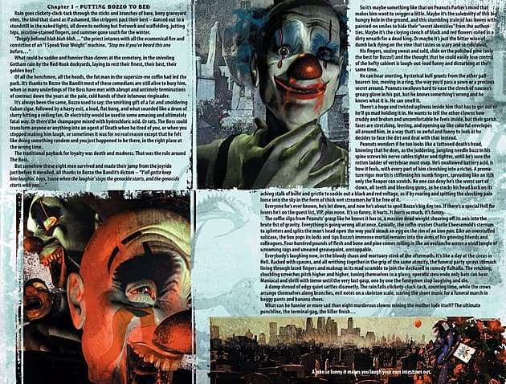

387 posts · 11576 views · started 2020-05-06 23:13 UTC
GO
Godai
2020-05-06 23:13 UTC
#1
Making a new thread for folks to suggest Topics for the Letters Page to cover, with the idea being that topics suggested here would then be posted on the Patreon the next time Topic Submissions are open. Not everyone is A) a Patron, or B) filled with their own ideas for topics to suggest.
If this takes off, maybe an admin could sticky this post so it is always available as time goes on?
SE
Sea-Envy
2020-05-07 01:38 UTC
#2
I Helped!
Bassed on the theory that all the printed RPG adventures are based on Sentinels Comics published by the company- How did the official cannon stories of each adventure go? (obviously long after the adventure has been out)
Writers room - A Freedom Five issue from back when Haka was a member
Creative Process? - Other than Unity what scene or element from the old Freedom Five cartoon has most often been referenced in comics or other media ( Real world the Hall of Justice and Legion of Doom Darth Vader head base from Super Friends are reused a lot and the new cartoon created characters of Black Vulcan, Samurai, Apache Chief , and Eldorado are often referenced)
PL
PlatinumWarlock
2020-05-07 02:33 UTC
#3
Writers' Room Topics:
An issue from Mister Fixer's days as Black Fist (full on blaxploitation, grindhouse comic here)
An issue from Captain Cosmic and Parse in space together, doing their spacefaring thing.
An issue from the Dok'Thorath Civil War, featuring Prime Wardens
An issue featuring Nightmist training Harpy, wherein something goes terribly wrong
An issue where a villain actually *wins*
An issue wherein the heroes outsmart the Celestial Tribunal
A 'swords-and-sorcery' story, in the vein of Conan or Red Sonya
Creative Process:
Allies of the Cult of Gloom (demons, otherworldly beings, etc.)
MacGuffins of the Multiverse (items that appear in numerous storylines, like the Infinity Gauntlet, the Anti-Life Equation, or the White Lantern Battery)
A day in the life at Sentinel Plaza (what's life like as a fledgeling hero?)
Strange Bedfellows (times when hero and villain had to come together to achieve some greater goal; also, failed crossovers between heroes)
Character-definining Arcs (those arcs that truly *changed* the way a character was viewed, like Green Arrow: The Longbow Hunters, or Iron Man: Demon in a Bottle)
Guest Authors in the Multiverse (arcs created by the SC-universe's featured authors, rather than comics-specific writers, in the vein of Ta-Nahesi Coates, Anthony Bourdain, or Neil Gaiman)
"Sentinels Beyond" (a reimagining of Sentinels heroes in the far future, a la Batman Beyond)
"Sentinels 1602" (see above, only for Marvel 1602)
Life in the Multiverse (favorite chains, restaurants, hotels, etc that have become ubiquitous over the comics history and the stories that have occurred therein)
Other:
Expatriette kills the Multiverse (just so it's here for posterity; I know it's already been suggested)
Conflicts behind the scenes (those times where the actual SC writers' room clashed over stories, characters, or other items)
The 70s Renaissance (featuring that enigmatic writer who revamped Argent Adept and Nightmist, among others)
The Iron Age (the minds behind reinventing the Wraith, building up Parse and Expatriette, and the focus on street-level heroes)
Merchandising! (all the *stuff* that gets made with the various Sentinels characters. Playsets, action figures, toy contracts. The Toys that Made Us, but for SotM)
TA
TakeWalker
2020-05-07 12:50 UTC
#4
I have but two desires.
A one-off Writer’s Room – emphasis on the ONE – where Adam and Christopher write what’s considered to be the worst issues in the metaverse. I’m not saying it has to be the one where Fanatic tries out other religions, but that’s along the lines of quality and fan reaction I’m talking here.
Just one issue.
And then we never have to do it again.
Also this, of course:
TR
Trajector
2020-05-07 16:24 UTC
#5
I've been fascinated by the Termi-Nation event for some time, specifically, the aspect where in that story the Freedom Five is starting to have second thoughts about the government's intentions and struggles with doing the right thing in the face of seemingly questionable orders. I'd love to see the story fully fleshed out with Legacy, Bunker, and Tachyon's reactions to that scenario.
PL
PlatinumWarlock
2020-05-07 21:22 UTC
#6
Damn, knew I missed an important one!
Yes, I’d absolutely like a full breakdown of the Termi-Nation event and the repercussions therefrom…
SE
Sea-Envy
2020-05-07 23:52 UTC
#7
Maggie and I talked about this once on YouTube but- Adam as art director going through the RPG to point out what was his art and what was done by others and what direction he had given to the contracted artist, calling out their names and possibly video chatting with them to discuss the creative process
Bring in Professor Christopher McGlothlin and Darren Watts to discuss The History of Sentinel Comics
SE
Sea-Envy
2020-05-10 23:23 UTC
#8
Writers room - a normal issue of a Vertex line comic; one of the decent stories when most people still trusted the writers and they had not gone off the deep end yet.
Creative process - cover gallery - many 2nd party sources and sometimes publishers themselves will publish reprints of famous covers
SE
Sea-Envy
2020-05-12 19:11 UTC
#9
Bring in someone from Underbite games and talk about Sentinels of Freedom- possibly when the RPG adventuer tie in is coming out or has been out for long enought to discus plot or to support the chapter 2 release of Sentinels of Freedom
SE
Sea-Envy
2020-05-14 05:10 UTC
#10
They did an episode about power sources that basically went through the 20 power sources in the RPG how about talking about all the Backgrounds and all the archetypes. What real world comics best show off that Background or Archetype what Sentinels characters best exemplify that a option.
Lawyers and judges are “Law Enforcement” there’s Dare Devil and Captain Cosmic.
Are there any Sentinels that don’t fit any of the 18 normal archetypes and will need to wait for new books to add new options to get stats. ( You could build Parse as a Gadgeteer or a Reality Shaper but I think Hypercognitive needs it’s own archetype. I also hope Captain Cosmic and Idealist get a true Constructionist archetype instead of Psychic or Minion Maker, Of course I also hope that when we get a Prime Wardens book we have other options for a dedicated frontline fighter than Powerhouse and Close Quarters Combat)
MI
MindWanderer
2020-05-19 02:07 UTC
#11
A few random thoughts:
I'd like them to bring in Dave Chalker and talk about his perspective on the RPG, how that came about, what it was like to work with GtG in general and C&A in particular, what his challenges were from a mechanical perspective, and of course answering the tough rules questions.
Writer's Room: an undiscussed imprint. Other than Disparation, we haven't seen stories about non-canon storylines, but Marvel and DC are full of this stuff. Entire series, some short and some that go on for years, that reboot specific heroes and aren't canon to the main universe(s), or where everyone is a high school student, or where all the superheroes have super pets/kids and the stories are about the pets/kids, or where everything is basically the same but more kid-friendly, or that cross over with other properties, etc., etc.
Spinning off that last thought, a crossover story with Castle Comics (Earth-Prime) with one or more guests from Green Ronin.
RA
Rabit
2020-05-19 13:02 UTC
#12
Okay, I'm finally almost through my latest re-listen, and this time I was actually taking notes! :-o
Here's my list of potential episode requests that Christopher and Adam have mentioned, removing suggestions that have already been provided in this thread (e.g., Termi-Nation event -- which I _really_ want to hear!):
Silver Gulch event (from Ep #29, et al)
Disparation on Citizen Storm, Arataki, Argent Artist, etc. (from Ep #59)
Disparation on Tempest initially encountering a villain instead of F5 (from Ep #59)
Disparation on Con meeting Haka (from Ed Note #15)
The story of Captain Cosmic and the Black Hole (from Ep #63)
Disparation V2 #150 - La Commadora goes to the Extremiverse! (from Ep #72 - I personally have no interest in this one, but am including it for completeness)
Story of Zhu Long's return after Dark Watch recovered Mr. Fixer (from Ep #75)
Universe Numbering System (from Ep #81, et al)
Singular Entities (from Ed Note #37) - They recently said this would have to wait for a while, though, so maybe once Prime War is better understood?
Ambuscade Hunting Ra (from Ed Note #37)
Resolution of Hunted Fanatic (from Ep #131)
Nexus Primalis Creative Process (from Ed Note #37)
Black Fist & Legacy in the Enclave of the Endlings (from Ep #129)
Adam & Immutus (This is a joke!!! Do Not Submit!!!)
Captain Cosmic and Galatra's child (from Ed Note #37)
A Writer's Room from Vengeance (from Recapsode 2019)
Disparation V1 #2 - World without The Wraith (from Ep #134)
Disparation V1 #3 - Evil Visionary (from Ep #134)
Disparation - World without Legacy (from Ep #134)
Disparation - Ryan Frost has a happy life (from Ep #134 -- This is a joke!!! Do Not Submit!!!)
Legacy's wedding, or some other wedding episode like Tachyon's (from Ep #134)
Time Cataclysm one-shot (from Ep #137)
Draw one-shot (from Ep #137)
A "rogues gallery" or some other "grab-bag" episode specifically to include the pheonix (from Ed Note #38)
The end of Captain Cosmic's "Dying Star" story arc (from Ed Note #38)
And some mentioned Christmas episodes we could submit, but have to make sure we time them appropriately! ;-)
Apostate Christmas (from Ep #131)
Year without Santa Claus - F5 (from Ep #131)
P2
Powerhound_2000
2020-05-19 13:51 UTC
#13
I'm pretty sure we got told that while they want to do a Singular Entities episode but that it wouldn't be one they could actually do in detail until much later.
RA
Rabit
2020-05-19 20:33 UTC
#14
Yeah, I know they're waiting on things for at least Prime War, if not something else. Just didn't want to lose it. :-)
Updated with a note to that effect. Thanks!
UN
Under3
2020-05-28 09:21 UTC
#15
Gadgeteer is Parse though, there isn’t a Sentinels hero it fits better than her. Its all about mental capability and analysis and actually nothing to do with gadgets if you read the description, the defining required powerset is Intellectual (so, again nothing to do with gadgets) and even get a Parse card name into the abilities and about half of them named analyze/analysis. It’s really kinda a bad name for the archetype.
TA
TakeWalker
2020-05-28 12:34 UTC
#16
No better way to get people to submit something than to say "This is a joke! Do not submit!" XD
RA
Rabit
2020-05-28 12:46 UTC
#17
walks off whistling to self, looking innocent
(I really miss emojis… )
P2
Powerhound_2000
2020-05-28 12:54 UTC
#18
This doesn’t seem like a topic submission but just a question in general to send in about why they went with Gadgeteer.
JE
Jeysie
2020-05-29 13:00 UTC
#19
I’ve actually submitted both of these in the past. FWIW. One under “Arataki’s Universe” and one under “Singular Entities 101”. The latter at least I know has gotten a statement to wait until Prime War has solidified/revealed things more, and I think the former was waiting on the RPG books.
What do you mean “joke”? I want my episode where Ryan is doing a journalist project covering some jazz concert and supervillains attack and as a side effect of their methods Ryan ends up with some sort of writing-based superpowers and helps the F4 save the day while making lame writing/music puns.
THIS IS A THING I WANT NOW THAT YOU PUT IT IN MY HEAD.
RA
Rabit
2020-05-29 17:15 UTC
#20
Well crap… :-\
Now I do, too.
SE
Sea-Envy
2020-06-05 14:41 UTC
#21
Writer's room Guise book 39 or 40- the 3rd or 4rth part of the Guise and Scholar team up against Young La Capitan
RA
Rabit
2020-06-16 23:56 UTC
#22
Wipeout's limited series! :-D
SE
Sea-Envy
2020-06-23 18:26 UTC
#23
writer’s room- Daybreak: the death of Aeon Girl
P2
Powerhound_2000
2020-06-23 18:29 UTC
#24
They don’t talk much story in RPG as it is and as such I doubt this would even come up for a vote at this point.
SE
Sea-Envy
2020-06-23 23:22 UTC
#25
Spooky Month special: Creative Process- "Death of " gimmick covers
one in the bag already with America’s Finest Legacy 236
I hear you Powerhound but they basically said that such a story would have been written so when we do get RPG timeline stories it couldn’t hurt
I was planning to edit my post to add the new idea
MI
MindWanderer
2020-07-09 21:57 UTC
#26
A flashback story about one of the historial Legacies, told from the perspective of their unpowered younger sibling. Probably a story of jealousy that turns into, "well, glad I'm not the one to get killed young and violently."
SE
Sea-Envy
2020-07-11 00:09 UTC
#27
Creative process the Shear Force adjacent properties of My Little Horsy and Care Dogs (with gems in their belies)
SE
Sea-Envy
2020-07-31 17:52 UTC
#28
La Comadora in the X-treamiverse
X-treamatron vs the world
Public domain literary characters
creative process PSAs and Advertisements
Sai-Pro Sentinels Smash story mode- What is the order characters fight and what dialogue starts and ends each fight
TA
TakeWalker
2020-08-01 16:16 UTC
#29
Very into just about everything C&A said "That's a good idea for an episode" about during the Gen Con Live episode. (It's on Youtube, you can watch it now!)
Most especially the PSA's Creative Process. :3
FJ
fjur
2020-08-24 20:57 UTC
#30
Justice Comics #1, where it all started.
PS: I'm not sure if this has already been suggested (I don't feel like ready through ~30 posts right now).
RA
Rabit
2020-08-30 18:55 UTC
#31
Caught something I missed in earlier re-listens: In Ed Note #17, they provided the suggestion of an episode on Fashion. :-o
Now I'm torn between that and Termi-Nation for my next submission... :-\
P2
Powerhound_2000
2020-08-30 20:31 UTC
#32
Termi-Fashion
TA
TakeWalker
2020-08-30 23:27 UTC
#33
I am all about Fashion. :D
I honestly do want to hear more about the heroes that got their own books or were major cameos in others', but never made it to the card game.
SE
Sea-Envy
2020-09-11 03:07 UTC
#34
I have been re-listening to the whole series and many early episodes had questions from Chris Burton
Chris is now on GtG staff could we get him in as a guest host some time to talk about his experiences and joining the team?
He may have talked about some of this when playing on You Tube but the stories are not know to the Letters Page
RA
Rabit
2020-09-11 16:37 UTC
#35
FYI: Look forward to this coming up in The Letter’s Page next week!
SE
Sea-Envy
2020-09-11 20:03 UTC
#36
nice
also now to go look at the cosplay pics of Ra
RA
Rabit
2020-10-02 12:55 UTC
#37
Cosmic Inversiverse (from #93)
LOL :D
SE
Sea-Envy
2020-10-03 01:53 UTC
#38
Christopher and Adam read (edit) the Sentinels of the Multiverse TV Tropes page
Creative process Styling Shirley omnibus 2017- they would have reprinted old comics ( and made new content in the old style ) in preparation of the new Fashion series. To show what the old material was like and reintroduce characters and locations they were going to use. My theory is that the happy, light, girl comic was her delusional memories of how simple things were back on Earth while she was trapped in the Colosseum. Even with no unethical scumbags modeling is a high pressure, stressful job.
Writers room that time travel story where they went to King Arthur times and fought a dragon
A listening party where a large number of GTG staff with bingo cards in hand listen to one or two of the award winning podcasts and coment on things they might not have know or joke they now understand
TA
TakeWalker
2020-10-03 12:52 UTC
#39
Oh, this is great!
CH
chrysaetoseagle
2020-11-17 14:43 UTC
#40
I'm not sure how to phrase it, but we really need to get the Clone Ranger story -- the event where Con gets corrupted and all that.
TA
TakeWalker
2020-11-17 19:40 UTC
#41
I definitely want that creative process on Tantrum. <.< I always thought she was neat, and at one point I even had her tapped to be a member of my team of little girl heroes until it was revealed she wasn't one. :B
YG
Yak_Guardian
2020-11-24 17:12 UTC
#42
She could be a Hero if her Inverse-iverse counterpart somehow ended up in the main universe.
TA
TakeWalker
2020-11-24 17:21 UTC
#43
I kept the idea for the hero deck, she's just not going on the team. :)
Putting in a vote for A Day in the Life of Benchmark! I can't imagine that would be anything like what we might think it would be.
SE
Sea-Envy
2021-03-03 23:58 UTC
#44
Night Mist supporting cast
we know that she did not start out familiar with all the world’s magic and consulted with other mystics- Naturalist, The Master, The Seer, an occult detective whose name i am blanking on that she did not invite into her house after a mission. who else did pre-void entity Fay go to for advise?
FJ
fjur
2021-03-04 00:37 UTC (in reply to #44)
#45
I believe that that is one Virgil Miller.
RA
Rabit
2021-03-08 16:00 UTC
#46
Going back through the episodes, again… In ep 138 (Writer’s Room for Dark Watch V1 #121), they talked about how they cheated on the “Hero/Villain team-up” request, so they asked that we submit that one again.
SE
Sea-Envy
2021-04-02 23:35 UTC
#47
Writers room Dispiration- "Return to the Manga-Verse; Bishounen adventures of Anthony Dimura
Writers room Tome of the bizarre- “Robert Johnson vs the Headless Horseman of Sleepy Hollow” can the music touch his soul when he has no ears?
Editors Note: discussion on the corporate restructuring after the Toditos buy out
JO
JoeSteeloak
2021-04-04 13:13 UTC
#48
I am just a $1 patron so I don’t get a vote, but I would love to see more writer’s room covers with covers of heroes still not featured. The Scholar and Naturalist for example.
JE
Jeysie
2021-04-04 14:33 UTC (in reply to #48)
#49
It’s why I’m happy we finally got an AZ Writers’ Room; he’s the one member of the F5 who hasn’t gotten any Writers’ Room cover appearances yet.
FJ
fjur
2021-04-04 15:01 UTC
#50
When I first read this, I thought you meant “Covers showing heroes who don’t actually appear in the comic.” (It’s a common marketing tactic.) : )
SE
Sea-Envy
2021-04-15 09:02 UTC
#51
Writers room “A murder most Fowl”
The comic cover for the issue was shown as part of the definitive edition Kickstarter so let’s hear the full story before we play the event in the game
GO
Godai
2021-05-11 21:20 UTC
#52
Based on the latest episode, I think someone needs to suggest a Writer’s Room for the Oracle of Discord impacting reality.
SE
Sea-Envy
2021-05-14 05:12 UTC
#53
Original Recipe, beginning to end episode on one character-
Cross Word
GO
Godai
2021-05-19 01:30 UTC
#54
Someone should suggest “Radiolandians”, since they are always greeting us out here in Radioland. Also, my memory is coming up blank, but did they ever comment on the possibility of Shards of OTHER Singular Entities as a source of power? I know the existence of Oblivæon Shards has been explained by titanic time shenanigans from a single point, but I can’t remember if they covered other options. If not, someone should bring that up.
SE
Sea-Envy
2021-05-27 08:57 UTC
#55
Writers room? / Creative process? the criminal Young Legacy dated, put in jail, and started down the path of redemption.
JE
Jeysie
2021-05-27 15:59 UTC
#56
This reminds me to also put down that Writers’ Room episode about the metahuman therapist.
FJ
fjur
2021-05-27 16:20 UTC
#57
I’m trying really hard to not be pedantic about this being a DC-specific term that does not exist in Sentinel Comics.
WA
WalkingTarget
2021-05-27 16:24 UTC (in reply to #57)
#58
To be fair, it would be really useful to have a general term for people with powers that’s less cumbersome than “people with powers” while also being power-origin-neutral.
FJ
fjur
2021-05-27 16:38 UTC
#59
That is very true, but that term has still never been used officially by Sentinel Comics. I guess you can say whatever you want, though. Grumble.
That’s why I used it, as it is the generic term as far as I always knew. Since I never read DC comics–I just read Marvel comics–yet I still picked up the term anyway.
Nor did C&A correct me when I used it in my letter.
GO
Godai
2021-05-28 00:02 UTC (in reply to #60)
#61
I just went and looked it up.
“ The term as a reference to superheroes began in 1986 by author George R. R. Martin, first in the Superworld role playing system (blah blah blah) “
then
“ The first use of the term ‘metahuman’ in the Marvel Universe occurred in New Mutants Annual#3, written by Chris Claremont, published in 1987, in which a Russian security officer describes the protagonists as “metahuman terrorists” “
then
“ The term was first used by a fictitious race of extraterrestrials known as the Dominators when they appeared in DC Comics’ Invasion! mini-series. “
So GRRM first did it in 86, Marvel used it in 87, and then DC really jumped on the bandwagon with Invasion in 1989. DC may use it more, but they weren’t the first.
So I say Metahuman is fair game. Carry on!
SE
Sea-Envy
2021-05-29 20:02 UTC
#62
remember the “Wild Cards” shared world anthology novel series was created because a group of “professional authors” were spending all their time playing Chaosium’s Super World and not writing books so George R.R. Martin said they should write super hero books using their characters.
As far as i have heard Holy Roller the fat televangelist with momentum powers has not gotten into the books yet. ( G.U.R.P.S. Wild Cards had art though )
To comeback to Sentinels- petition for a “Pops” hero deck
or an actual episode talking more about the old RPG game that gave us Red Star / Proletariat and Sergeant Steel
FJ
fjur
2021-05-29 20:09 UTC
#63
But his Innate Power and every card in his deck would just read “Incapacitate Pops. Pops deals each target [an absurd amount of] irreducible damage,” though.
Ditto.
SE
Sea-Envy
2021-05-29 20:17 UTC
#64
Nah, the “self detonation” power set includes reforming.
It would probably be a “skip your next (x) Phase”
DN
Dil_Ninja
2021-06-01 20:18 UTC
#65
I’m not sure how interested Christopher or Adam would be or if they actually read/watched any of these, but one suggestion that might be interesting is Sentinel Comic’s version of the “mature”, super-violent, counterculture superhero comics. Things like Watchmen, The Boys, or Invincible. Some of these could also cross over into the main comics, like Watchmen has with DC.
It could also be that those franchises exist unchanged in the metaverse, only people call Homelander or Omniman Legacy parodies instead of Superman parodies.
P2
Powerhound_2000
2021-06-01 20:22 UTC (in reply to #65)
#66
That definitely sounds like a meta verse thing of other publishers. Vertex and Prime War aka Sentinel Tactics timeline seems to be the main place where they kind of go more brutal.
DN
Dil_Ninja
2021-06-01 20:48 UTC
#67
Yeah, actually that makes sense.
I do think there’s a distinction between the original comic company making a dark gritty reboot (Vertex, or in the real world Ultimate Marvel) and an independent company making a dark gritty satire, but I don’t know if that’s in the purview of the podcast.
Then again, we had some episodes on Shear Force, so who knows?
It might also be too many layers, making a satire of an homage.
RA
Rabit
2021-06-01 20:55 UTC
#68
@Dil_Ninja, you could write in a question asking if Sentinel Comics ever published (even under another label) darker books…
TA
TakeWalker
2021-06-01 22:37 UTC
#69
I’ve long desired an episode about a badly written comics issue, and now I think I can point to Alpha 2000 as a specific example that would make for an excellent – and one-time – writers’ room. :3
FJ
fjur
2021-06-09 14:51 UTC
#70
Creative Process: Flats The Detective (who first appeared in Episode #151)
TA
TakeWalker
2021-07-06 16:10 UTC
#71
We definitely need a Creative Process and/or Writers’ Room for both the Kaijuverse and whatever Shear Force-style-licensed Sentai group exists in the diverse array of Sentinel Comics.
SE
Sea-Envy
2021-07-07 07:56 UTC (in reply to #71)
#72
Most movies have Gojira as a defender of Japan so I imagine a Legacy monster protecting America with Unity as the fairies used to summon Mothra
SE
Sea-Envy
2021-07-21 07:40 UTC
#73
After episode 4 of One Shot Podcast I think we seriously need the episode about the super therapist and his enemy Stigma
TA
TakeWalker
2021-07-21 12:44 UTC (in reply to #73)
#74
Stigma’s a powerful psychic whose only ability is making people feel self-aware and embarrassed.
FJ
fjur
2021-07-21 15:51 UTC
#75
Writers’ Room: The Science & Progress One-Shot (It’s quoted on many cards, yet C&A have never said a word about it!)
Writers’ Room: An Issue During the OblivAeon Event
WA
WalkingTarget
2021-07-21 17:36 UTC (in reply to #75)
#76
It’s the issue that introduces Krystal Lee as Tachyon’s intern. It’s also the one where Dark Visionary kills a bunch of scientists and mind-wipes Tachyon to hide her tracks. Published April '91.
FJ
fjur
2021-07-21 19:16 UTC
#77
Oh yeah, I forgot they told us that. Thanks, WalkingTarget. Well, there are still quite a few flavour texts that reference other things in the issue, so I’d still like to hear about it.
FJ
fjur
2021-08-11 02:09 UTC
#78
Writers’ Room: A Day in the Life of the Bartender of the Wretched Hive
Writers’ Room: A Joe Diamond Story
DN
Dil_Ninja
2021-09-21 05:07 UTC
#79
Writer’s Room: Supporting Cast Saves the Day
A story in which a non-superhero side character is forced to fight a villain/save the main hero. It could use some of the supporting cast from the many creative process episodes, or use some of the side characters that have been around forever, like the heroes’ spouses, Wraith’s dead friends, Amelia Twain, ect.
BU
Burrower
2021-09-24 21:30 UTC (in reply to #79)
#80
Running off supporting cast idea, some suggestions
Writer’s room: Freedom Tower Support Staff (aka the “Lower Decks” issue)
Writer’s room: Wraith/ Naturalist team up (because A&C have said it happens, and because they’re the only two who can have proper Secret identity issues with each other)
Writer’s room: Legacy & Jefferson Knight butting heads
I’d like to hear more about Captain Cosmic and space Princess Xileen (?) and the Jidalans (?), who were mentioned as an ongoing plotline in the shipping episode- not sure if this is Captain Cosmic Supporting Cast or a Writer’s Room, though.
DN
Dil_Ninja
2021-10-14 19:59 UTC
#81
Writer’s Room: Non-canonical/Retconned Future Story
Ok, so since this game first came out we’ve all been wondering about far, far future stuff for the Multiverse. Things like “Legacy one-million” or the possible descendants of our beloved heroes and villains. Christopher and Adam stated a couple episodes ago that they do have plans internally for these, but it will take quite awhile to get around to them (I don’t think we’ll see any of it until the sandwich bag pops in the RPG, and who knows how many books that will take).
We’ve also already seen some retconned future stuff, like “canon” Legacy’s future death described in Iron Legacy’s bio. So maybe we could have a story similar to the Silver Gulch events, a one-off from the 60s/70s before the mechanics of time travel and alternate universes were solidified.
Alternatively, if that wouldn’t be satisfying or would give away too much, there could also be “Writer’s Room: Future-themed Disparation” with retro-futuristic versions of the present characters, but I think the Xtremeverse already covers some of that ground.
RA
Rabit
2021-10-14 20:36 UTC
#82
Thought about asking for the Freedom Five space mission when they all got Bunker suits…
FJ
fjur
2021-11-12 20:33 UTC
#83
Writers’ Room: Nightmist & Gloomweaver Team-Up
Writers’ Room: The Organization Versus Gene-Bound
Writers’ Room: An Equity Story
Creative Process: Setback Sitcom
Creative Process: Mini-Nemeses Backstories
FJ
fjur
2021-11-24 16:38 UTC
#84
Writers’ Room: Hero-Hunting Expatriette
FJ
fjur
2021-11-27 21:39 UTC
#85
Creative Process or Writers’ Room (Depending upon how much C&A have already created): The “Heroes of Yesterday”*
*As seen on the banner in the big art at the beggining of the Archives in the SCRPG Core Rulebook.
JE
Jeysie
2021-11-28 05:42 UTC (in reply to #85)
#86
I requested “Heroes of Yesterday: The International Half” a while back but it didn’t get up for a vote. Was planning on suggesting that or just “Heroes of Yesterday” again at some point.
GO
Godai
2021-12-15 06:30 UTC
#87
Writer’s Room Request: Freedom Five #666, which is apparently an October Issue during the Miss Information era. What plot did she pull off?!
TH
Thunderbird
2021-12-15 18:30 UTC (in reply to #87)
#88
That’s pretty much up to the writers in the Metaverse if they’re even going to acknowledge Issue 666 as something significant. I guess if you were gonna run with that theme, you could have “Apostate” show up to harass the Freedom Five, only to later reveal that the Deceiver was someone else’s deception.
Separate from that, you could even go deeper (Inception?.. Deception!) and stack up the villains that often use misdirection (Miss Direction, I have to assume, being a Disparation alternate hero/villain) - the plot was all a machination of Glamour, no wait - Apostate - no, Biomancer - uh, I mean… Miss Information?!
GO
Godai
2021-12-15 19:04 UTC (in reply to #88)
#89
They revealed this stretch of Freedom Five was solidly in the middle of a two-year long Miss Information arc. I’m not saying they specifically did something with it, but it is the October issue, it’s #666, and Miss Information has been screwing with them for a year at this point. Odds are it was at least discussed in the Metaverse.
FJ
fjur
2022-01-22 17:57 UTC
#90
Writers Room: Setback in the Viking Age
DN
Dil_Ninja
2022-01-28 23:30 UTC
#91
Now that DE is in many people’s hands, here are some topic ideas based on the new content.
Click Here for Topics (Spoliers)
Wayward Sun Event
A Murder Most Fowl Critical Event
Earth Inc. Critical Event
Gene-Doctor Kronz and the Thorathian Gene-Binding Journal
A Writer’s Room for any of the Issues on the 1st Appearance Cards. (I’d like to see Mystery Comics #27 aka Wraith’s 1st Appearance or Cosmic Tales #232 aka Tachyon’s notable defeat)
These topics are probably a bit obvious, but it’s good to state them anyway.
GO
Godai
2022-01-29 03:51 UTC (in reply to #91)
#92
My copy just showed up today! About to open it up right after this post.
TA
TakeWalker
2022-01-29 14:15 UTC (in reply to #91)
#93
I really want to know the story behind #3, considering it’s something that they’ve never even mentioned before.
TJ
The_Justifier
2022-01-29 14:44 UTC
#94
If by #3 you mean Earth Inc., I’m pretty sure that was a story about Akash’Bhuta being plugged into by machinery from some evil corporation, and we even got a preview image of a DE Event card for this, showing something that looked like a Primordial Limb emerging from the ground, but it was studded with metal bits.
TR
Trajector
2022-01-29 17:49 UTC
#95
Yes. But not just some evil corporation…
TJ
The_Justifier
2022-01-29 20:24 UTC
#96
I suspected it was Revocorp, but I couldn’t remember for sure. Conteh Energy was the other main candidate I could think of.
FJ
fjur
2022-01-30 23:47 UTC
#97
Creative Process: Sidekicks
JE
Jeysie
2022-01-31 08:55 UTC (in reply to #97)
#98
Fair warning that back in the D-List Heroes episode they did say in response to my own question about the matter there’s almost no kid or teen sidekicks specifically at least.
P2
Powerhound_2000
2022-01-31 12:10 UTC (in reply to #98)
#99
Just to add on, most of our known sidekicks are usually main heroes in their own right such as Unity, Omnitron-X, and Setback
JE
Jeysie
2022-01-31 15:02 UTC (in reply to #99)
#100
I think Marty’s the only established sidekick we haven’t heard extensive info about (as Thiago we’ve heard about in various places obvs), but I already submitted a normal episode about him once as a topic, so they’re probably waiting on him as an RPG thing.
FJ
fjur
2022-02-01 00:38 UTC
#101
I know. Ignoring kid sidekicks, I’m sure there’s still at least a few sidekicks that have existed in the SC Universe we are as-of-yet unaware of. Also, it seems likely that there was at least one kid sidekick around (Unity and the Idealist notwithstanding).
MI
MindWanderer
2022-02-24 19:49 UTC
#102
I forgot this thread existed, even though I’ve had an idea on my mind for a while. Anyway, I was thinking we needed more Scholar stories, maybe a Golden Age one since we don’t have many heroes who go back that far.
TJ
The_Justifier
2022-02-24 20:06 UTC
#103
Speaking of that far, I was thinking about the very earliest Plague Rat stories. Just how far back in history did the concept of “mutation caused by toxic waste” exist? For that matter, how long ago WAS Pike Industries generating toxic waste? I’m pretty sure that PR at least predates widespread knowledge of radioactivity, so the fact that his fluids are glowing green is a peculiar bit of coding.
DR
DrOmicron
2022-02-24 20:06 UTC
#104
I would love to see a Writer’s Room for a story where some of the villains in Villains of the Multiverse team up (Bugbear, La Capitan, Sergeant Steel, The Operative, Plague Rat, Biomancer, Miss Information, Citizens Hammer and Anvil, Greazer, and Ambuscade/the Slaughterhouse Six). A lot of them are really cool characters, but it seems kind of unlikely for a lot of them to be “teaming up” or otherwise working together, so I’m curious what kinds of things they had in mind when assembling that set.
Wow, so it was just last year? Time has had no meaning since the start of the pandemic. Just now starting to feel like regular life again.
But yeah, I want to hear a story about Earth’s Crunchiest Heroes! Maybe include Captain Cosmic just so there can be some confusion and a joke about chips versus crisps!
TJ
The_Justifier
2022-02-25 15:40 UTC (in reply to #107)
#109
Yeah, but Todd Lito’s Biscuits is a pretty deep cut.
P2
Powerhound_2000
2022-02-25 15:46 UTC (in reply to #109)
#110
It’s not really. It got brought up last February in the Fashion Writers’ Room episode. It’s also in that KS update I posted. I might agree if the last and only mention was the Golden Age Legacy Radio Play.
SK
skywhale
2022-02-25 15:52 UTC (in reply to #107)
#111
That’s also the day Thunderbird joined the Forum, so it clearly must have been very impactful.
MI
MindWanderer
2022-02-25 22:31 UTC (in reply to #103)
#112
X-Men vol. 1 issue 1 came out in 1963, and it always had the premise that their powers came from mutations caused by nuclear radiation. Plague Rat came out around the same time, and his origin story was written a few years later. So it’s perfectly appropriate on that front.
P2
Powerhound_2000
2022-03-01 21:28 UTC (in reply to #104)
#113
I used it for my suggestion this month. We shall see what that produces if anything.
SK
skywhale
2022-03-01 22:23 UTC
#114
I would like to see a Definitive Edition rules episode (or something similar). I love the lore, I really do, but there are quite a few rules things I wish were set in stone.
P2
Powerhound_2000
2022-03-02 00:59 UTC (in reply to #114)
#115
Based off today’s episode I doubt it’ll happen as voting will always go towards more lore stuff.
SK
skywhale
2022-03-02 01:08 UTC (in reply to #115)
#116
Is there anywhere else we could get rule clarifications? “From the source”, that is. I’d be fine with it written down somewhere, because I definitely understand people wanting to hear lore more than rules.
P2
Powerhound_2000
2022-03-02 02:18 UTC (in reply to #116)
#117
Possibly over twitter. His handle is GTGChristopher
TR
Trajector
2022-03-02 03:17 UTC
#118
The definitive (ha) set of clarifications for the EE came from the “Fireside chats” as Handelabra went through the work of implementing things in the video game. The community ultimately collected all that together on the wiki. But it took years to collect it all.
Hopefully they’ll post a FAQ or do a Q&A on the forum or set something up on the wiki, so we have it all in one place again.
MI
MindWanderer
2022-03-05 17:45 UTC
#119
The plan is to do a formal FAQ on the website, but that’s been the plan for the RPG, too, and that hasn’t materialized. There will definitely be small FAQs in the expansion rulebooks, for the very most frequently asked questions.
Creative process
-High Brow
-Cue Ball
-Crossword
-The Fey Court
Creative process / writers’ room an old story that is recognized as an early retcon. - when dispiration came out some older stories were now said to be another world and not core reality. unlike Fanatic follows all religions a story people will admit to, just that it was a dispiration before dispiration.
TJ
The_Justifier
2022-03-28 00:10 UTC
#127
Not that I get to vote, being a non-supporter, but I’ll +1 to Highbrow and Cue Ball (though I should probably reverse the order there; Highbrow is one of those characters that I kind of have my own headcanon on, and frankly what we’ve gotten from the podcast doesn’t seem to quite measure up). The Fey Court are very interesting, but a lot of the information about them in SOTM will parallel the corresponding info in general mythology. So Cueball is the one that I have the most interest in getting strictly canonical info about (like what powers he gets from each color of ball).
TH
Thunderbird
2022-03-28 00:34 UTC (in reply to #127)
#128
If I’m not mistaken, isn’t Pool Shark on the Neighborhood Watch team with a Writer’s Room coming up at the end of April? How can you not have Cueball as a foe in that? So we could get a little exposition that way.
MI
MindWanderer
2022-04-02 03:24 UTC
#129
Inspired by yesterday’s livestream:
Writer’s Room: Paul and Chris Burton write an issue of Disparation
BU
Burrower
2022-04-06 10:52 UTC
#130
Writer’s room: A historical Virtuoso of the Void Story (eg a story about Sister Saffron)
Writers room: Expatriette as Elizabeth Bennett (her guns ‘are’ called “Pride” and “Prejudice”)
SE
Sea-Envy
2022-04-06 11:43 UTC
#131
Writer’s room- a detective story staring Joe Diamond and his daughter
SE
Sea-Envy
2022-04-12 20:37 UTC
#132
Writer’s room “Anthology mismatch” = A tech/science hero story in Tome of the Bizarre or Arcane Tales. We know about Naturalist + Akashthryia on Dok Thorath so magic/terrestrial hero in Cosmic Tales is established
Possible even a Mystery Comics with clueless/unsubtle hero and villain? a good story but not much mystery.
MI
MindWanderer
2022-04-19 19:30 UTC
#133
Writer’s Room: Disparation: “Wacky Races”
(Really, I mostly just want the art. But the story could also be amazing.)
TJ
The_Justifier
2022-04-19 19:32 UTC (in reply to #133)
#134
Races as in “Who’s faster, Superman or the Flash?” Or races as in “Atlanteans and Amazonians”?
from the same people that made the live action D&D cartoon car commercial
SE
Sea-Envy
2022-04-22 05:58 UTC
#137
we have seen a Wacky Races Sentinels story before
Extremiverse Freedom Five
Legacy in a Legacy car
Bunkers in a Bunker truck
Absolute Zero in an AZ tanker
Tachyon and Wraith on bikes
SE
Sea-Envy
2022-05-16 04:11 UTC
#138
The Laser Ridders licensed comic Sentinel Publishing would have made.
I have only a vague understanding of the game, but I know there are multiple characters racing each other but did the cartoon and its comic create factions with good guys vs bad guys or was it a free for all?
FJ
fjur
2022-05-22 16:58 UTC
#139
Writers’ Room: The Wraith v. Legacy
GO
Godai
2022-05-22 18:13 UTC (in reply to #139)
#140
Bonus Points: Set it in the RPG era, Felicia vs Maia
TH
Thunderbird
2022-05-22 23:17 UTC (in reply to #140)
#141
So, what - Felicia’s like 23, Maia is maybe nearly 30 by that point, and Paul is possibly early 50s? Yay, comic book aging!
JE
Jeysie
2022-05-23 01:08 UTC (in reply to #141)
#142
In Episode 154 they say that Heritage is in his early 60s, actually.
Which seems a little old to have a daughter in her mid-20s, but…
TH
Thunderbird
2022-05-23 13:32 UTC (in reply to #142)
#143
Oh jeez! It’s like he had a pause for a while, then time caught up with a vengeance! I mean, it’s not completely unheard of. In my 30s I worked with a woman about my age who was married to guy in his 60s and they had a toddler together.
I find it more strange that Maia was already a 20-something costumed hero when Felicia was born, and is now approximately only a decade older once she’s finished college and taken the Legacy mantle.
JE
Jeysie
2022-05-23 13:57 UTC (in reply to #143)
#144
I was born when my mom was 35 (my dad was 33, though, not 60), so I was 25 when she was 60… but that was very unusual back when I was a kid in the 80s. (It’s far more common now, obviously, but…)
Granted, with Emily having a political career it does put her in a group that would want to delay having children for a bit.
TH
Thunderbird
2022-05-23 14:33 UTC
#145
If they did go for RPG Legacy vs. Wraith, it would certainly make for some interesting dynamics. We just heard about the “Girl’s Night” (not exactly) Writer’s Room with those three being within about 5 years of each other’s age IIRC. To put Maia in there would be kind of like the slightly older “cool” aunt, I guess. Trying to decide who’s cooler between her and Tachyon is tough since they’re both kind of uptight/serious in their own ways.
TJ
The_Justifier
2022-05-23 16:33 UTC
#146
Just as it was once hip to be square, it is now cool to be uptight. No? Nobody?
MI
MindWanderer
2022-05-26 22:23 UTC
#147
I’m more amused by the fact that in the 1950’s, Fashion and Wraith were about the same age, then Fashion gets lost in space but doesn’t age much due to time dilation, she comes back and all her old friends are senior citizens now, and she’s still the same age as the Wraith.
TA
TakeWalker
2022-06-21 15:12 UTC
#148
After Editor’s Note 56, I need powered Ermine vs. powered Wraith.
It could be Disparation, or it could be a story about a villain making a power-transfer machine, powering Ermine up (or Ermine deciding she would be the one to use it), and Wraith having to do the same to counter her.
MI
MindWanderer
2022-06-24 04:17 UTC
#149
Oh, I almost forgot this one: Vampire World: Young Legacy and Baron Blade.
(I thought of this in the middle of the episode and really wanted to see the interaction between Felicia and Paul. Oh well. I still want to see her in that world.)
GO
Godai
2022-06-29 03:51 UTC
#150
Based on the latest episode, someone needs to ask if Biomancer has tried making a flesh child of the current Legacy, using the genetic code from that with all the powers, and “fake” a child offspring flesh child to see if they could get new powers and/or see where the power tree winds up 100 generations down the line. I assume it’s likely to fail because Singular Entity reasons, but did Biomancer ever try?
SE
Sea-Envy
2022-07-12 19:50 UTC
#151
The issue of Dispiration that came out the month after Freedom Five 683
It would have been an alt Freedom Five story with the “I had a weird dream” callback joke to the Sliver of Creation story and would have focused in on one of the “other power source focused” teams that was part of the finale that was not known before the La Capitan event.
SE
Sea-Envy
2022-07-15 10:22 UTC
#152
Interlude- The Christopher Badell story: the South America years.
LI
liarliar
2022-07-23 07:17 UTC
#153
I know it’s been up for voting before, but I still really want A Day In The Life: Ra
He gets so little in the way of deep characterisation, it would be nice to really delve into what makes him tick! Plus, I think the divide between Blake and Ra could make for some interesting conflict, even without a focus on the usual superheroic world-in-peril drama.
SE
Sea-Envy
2022-07-23 18:36 UTC
#154
Creative process Bunker Villains
(They said there is one they have in the files that they want to share)
FJ
fjur
2022-07-26 15:33 UTC
#155
Creative Process: A Story-Based Villain
JE
Jeysie
2022-07-26 17:49 UTC
#156
Bunker Foes came up for voting once, but didn’t get voted in.
There’s three others that keep coming up in voting regularly but not getting voted in:
Legacy’s Independence Day Spectacular
Silver Gulch stories
A story featuring a (non-horror) literary figure
We on the server have noted this, figuratively smacked ourselves, and been like “Maybe we should, like, actually vote these in the next time they show up, yes?” after that Editor’s Note answer where we felt called out, lol.
TR
Trajector
2022-07-27 00:09 UTC (in reply to #155)
#157
"Bwa ha ha! I am Tall Tale, the dastardly villain who reshapes reality by spinning an irresistible yarn, which then takes form!
“Why, Mr. Fjur, what a distinguished job you have as night guard at the Megalopolis Central Bank! But this job bores you. You are looking for something that fulfills your ultimate potential. Yes! At the end of your shift one morning, you saw a man in clown shoes across the street from here, entertaining children by making balloon animals. You felt captivated, and when you got home you immediately devoted yourself to the task of creating ever more complicated and elaborate balloon-based constructions! You became so consumed with this passion that you began to show up late for your security rounds! Now, after your dedicated study, you are finally ready for your greatest challenge: Little Thiago’s Birthday Party! No guard shift could possibly compare! You set out in your clown shoes at once!”
Mr. Fjur, who suddenly finds himself wearing clown shoes, begins to feel an incredible compulsion. He drops his baton and starts waddling away at high speed.
Tall Tale cackles maniacally and robs the vault.
(Sorry, I think I mis-parsed what you meant )
TH
Thunderbird
2022-07-27 00:27 UTC (in reply to #157)
#158
I was wondering if they did mean it that way, considering the post credit stinger on the latest episode. I mean, it would fit right in with the setup of The Teller…
FJ
fjur
2022-07-27 01:19 UTC (in reply to #157)
#159
No, that is exactly what I meant. : )
Now, I need to go pick up some more balloons.
GO
Godai
2022-07-27 05:14 UTC (in reply to #159)
#160
Helium? In this economy?
FJ
fjur
2022-07-27 14:20 UTC
#161
Well, actually, we don’t use helium. The balloons we use are too porous for it, so it might escape, and they are so heavy that the helium would not even lift them. Instead we just use air or nitrogen.
TR
Trajector
2022-07-27 22:02 UTC (in reply to #158)
#162
Ah, I’m behind!
FJ
fjur
2022-08-07 14:45 UTC
#163
Creative Process: All About Fahrenheit-X
Writers’ Room: Golden Age Freedom Five, featuring Legacy, The Wraith, Haka, Absolute Zero (Henry Goodman), & the Shrieker
FJ
fjur
2022-08-11 21:11 UTC
#164
Creative Process: Villain(s) for each of the individual members of the Southwest Sentinels
Writers’ Room: An Episode of the ‘60s Wraith TV Show
Writers’ Room: An Episode of the ‘40s Legacy TV Serial
TJ
The_Justifier
2022-08-11 21:57 UTC (in reply to #164)
#165
I would be more interested in the mid-20teens Legacy Cereal, which was of course manufactured and sold for a limited time to promote the release of the movie “Wraith v Legacy: Dawn of Freedom”. (Fun fact, that Superman cereal was actually really good, and I would still buy it today without hesitation if they had kept making it. Of course, in the Sentinelverse, corporations are more competent and less greedily exploitative, so the WvL movie was actually good, with its sequel Freedom Five not even requiring a Director’s Cut, and both cereals were good enough and popular enough that they remain available for purchase in all the major chains to this day.)
TH
Thunderbird
2022-08-11 23:46 UTC (in reply to #165)
#166
I think they could do an entire Creative Process about Sentinel Comics promo products. I vaguely remember some suggestions in some episode - maybe an Editor’s Note? There’s bound to be a Sentinels hero limited time flavor of Todido’s and whatever the Metaverse equivalent of Mtn Dew is.
GO
Godai
2022-08-12 01:35 UTC (in reply to #166)
#167
Benchmark Blast
Edit: only available at Taco Bell, naturally.
TH
Thunderbird
2022-08-12 02:57 UTC (in reply to #167)
#168
Benchmark would definitely be the product placement no one asked for! And I would correct you to say Schmaco Schmell, but The Letters Page has sounded pretty open to the idea of a Taco Bell sponsorship on more than one occasion!
GO
Godai
2022-08-12 04:18 UTC (in reply to #168)
#169
Oh god…
“Benchmark Blast: The Dew Standard!”
TJ
The_Justifier
2022-08-12 10:57 UTC (in reply to #168)
#170
Please don’t resurrect the Joe Schmoe joke, it was harder to kill than Thanos in the first place…
FJ
fjur
2022-08-12 14:32 UTC
#171
I don’t think it ever died.
MI
MindWanderer
2022-09-29 22:02 UTC
#172
Writer’s Room: A story about the Host (after they were named and explained)
TH
Thunderbird
2022-09-30 00:08 UTC (in reply to #172)
#173
Yeah! We had the Singular Convergence, so now I want to see the Congregation of the Host! (Or whatever it’s called when they’re all together and we get to see a lot more Spirits!)
SE
Sea-Envy
2022-10-13 08:40 UTC
#174
Writers room Justice Comics 67
MI
MindWanderer
2022-10-13 21:02 UTC
#175
Pursuant to this conversation: “Papa Legba’s” origin story, in which we learn that he’s not the real lwa and he just stole the name and aesthetic because he thought it was cool.
TA
TakeWalker
2022-11-08 16:18 UTC
#176
“The Soul Seeker story is really cool,” says Christopher.
“Well,” says I, “I’d really like to hear that cool story, then!”
DN
Dil_Ninja
2022-12-08 18:27 UTC
#177
Ok, this is about as general of a topic as you can get, but how about “A story with an unorthodox format.”
Just a comic where the format of the story is presented in some creative way. It could be as simple as a story with no dialogue, or a complicated, nonlinear time travel story. Maybe a bizarre La Capitan or Wager Master story where reality is breaking down and it leaks throughout the panels. Something like the “10 Seconds” story from the Chrono Ranger episode, or something else entirely.
And if the topic is too general, if C&A already have a story like that they haven’t told, they could put that up for voting instead.
SK
skywhale
2022-12-08 18:35 UTC (in reply to #177)
#178
I love this idea! There is a Batman issue called “The Clown at Midnight”, which is about the Joker’s (duh) clowns which I think is a perfect example of what you’re thinking. It’s written sort of like an illustrated storybook - extremely atypical for a comic book.
Example Picture (clowns)

TH
Thunderbird
2022-12-08 22:36 UTC (in reply to #177)
#179
I think Xtreme Freedom Five story that’s basically The Road Warrior fits this.
A Day(?) In the Life: Free Radical
TJ
The_Justifier
2022-12-08 23:53 UTC (in reply to #177)
#180
There are many things Christopher and Adam are excellent at writing. But properly plotting and planning out a good time travel story is one of the most difficult tasks a fiction writer can tackle, and to be blunt, even C&A aren’t that good, nor do they have the particular talent necessary to do such a thing even without being superlatively skilled. Their time travel writing is on the Doctor Who level, which means it isn’t really about the time travel, and doesn’t even try to do time travel right, it just tells a fun story with time travel as a cosmetic backdrop (the equivalent of using scientifically inaccurate dinosaurs because they’re cooler, and barely handwaving some explanation about evolutionary microclimates that doesn’t really stand up to scrutiny since that isn’t the point).
On the other end of the spectrum, there’s the movie Primer, which does time travel basically perfect, but is boring and difficult to watch, having been made on a shoestring budget. If the Primer guys (who I would say do have that specialized talent I mentioned) could have afforded a bunch of special effects and fancy costumes and such to liven their story up, then C&A would be great to bring in as creative consultants, designing a bunch of cool stuff to put in some epic high-tech future which the time machine goes to… and the Primer writers would concentrate on the time travel itself. (A good example of the middle ground is Back to the Future, which is about 70% of the way towards the Doctor Who extreme, but makes a fair amount of effort to be consistent, though nowhere near as much as Primer does.)
TLDR… this is a cool idea, but it’s off-brand for the >G team.
SK
skywhale
2022-12-09 00:55 UTC
#181
The real perfect time travel movie is About Time, which I personally highly recommend!
(Of course, I am of the mindset that the story is way more important than the time travel itself, part of why I enjoy C&A’s stories.)
TR
Trajector
2022-12-09 17:52 UTC (in reply to #180)
#182
I agree that it takes a lot of planning to make a good time travel story work out, but this isn’t about talent. It’s about the effort the creator is willing to invest in that planning and plotting, and the ultimate message they want to convey with the story, and whether the two agree well enough for the payoff of the story product that comes out.
In other words, the stories C&A are telling are fundamentally comic book stories. So when they tell a time travel story, they’re going to tell a comic book time travel story. That doesn’t require that the science work out correctly or that there be a ton of threads that come out self-consistently. That’s why you’re more likely to end up with the Sentinel Comics version of Back to the Future than Primer, regardless of the talent involved.
TJ
The_Justifier
2022-12-09 18:53 UTC (in reply to #182)
#183
I get what you’re saying, but you misunderstand what I meant. It’s not that talent is a stat and I’m saying C&A don’t have enough of that stat to write a Primer-with-superheroes, or even a BTTF-with-superheroes. It’s that writing either of those stories would require a particular type of talent, as well as some degree of skill, and C&A have enough skill for most writing, but they posses a different type of talent.
To illustrate by way of example, let’s use the Dungeons and Dragons rules system. In D&D, specifically its 3rd edition, you roll a D20, add your Attack Bonus, and need to exceed or equal (I’m not sure which offhand) the Armor Class of the target. So if your target is AC 15, and you have +5 to attack, then you’ll hit if you roll 11 but you’ll miss if you roll 9. So let’s say that to write a time travel story that’s good, you need to roll higher than 20, and critical hits aren’t a thing, so it can’t be done unless you have an additional bonus. The task has AC 34, and so if you only have +12, that’s not enough. So you take the feat “weapon focus”, and the same GM who took away critical hits also said that +1 to hit isn’t good enough for a feat, so instead it’s +3. So with the feat and +12, you can hit on a 20 or maybe a 19… but only if you’re using the weapon that you picked Weapon Focus for.
That’s the point I’m trying to get at. C&A have a way better writing skill than I do, but this particular task is too difficult for all but an incredibly talented writer, or someone who has the Writing Focus: Time Travel feat. I don’t have that many points of writer skill, but I do have the feat, and a certain guy I know has more skill than me, plus the feat, but he’s busy doing other things, so he can’t write anything unless someone pays for his time. My time, on the other hand, is still relatively plentiful and worthless, so I could do this, or I could help someone else do it.
FJ
fjur
2023-01-02 20:55 UTC
#184
Writers’ Room: Tyler Vance sans Bunker Suit
FJ
fjur
2023-02-01 23:21 UTC
#185
Writers’ Room: An Issue That Was Published in the Metaverse During the Very Same Month and Year That This Very Episode of The Letters Page Is Being Recorded And/Or Released in the Meta-Metaverse
TH
Thunderbird
2023-02-02 01:09 UTC (in reply to #185)
#186
Uh, are they that far along? I’m thinking it’d have to be RPG era, or maybe Vertex. I could have my timelines mixed up, though.
TJ
The_Justifier
2023-02-02 03:38 UTC
#187
I’d definitely like to know more about Vertex, but I think at this point our reality has already outlived the Miststorm Timeline…
FJ
fjur
2023-02-02 04:12 UTC
#188
The OblivAeon Event occurred in 2016. According to the Vertex episode of The Letters Page, Vertex began “a few years” after OblivAeon, so I’m assuming 2018-2020. That same episode says that it lasted for 5 or 6 years, so 2023-2026. So, even going with the most conservative guess, we’d be able to see the tail end of the Misstorm Universe before it implodes.
The RPG Timeline, on the other hand, we know begins practically right after OblivAeon, so 2017. Presumably it continues indefinitely into the future until the end of time. We don’ know how far C&A have planned, though. They haven’t released any adventure issues past the first year, methinks, but they have hinted at futures plans that seem to be relatively far way. (Although I doubt they’d reveal anything too secretive.)
Then again, perhaps just “Any Vertex Issue” might be a better topic?
TJ
The_Justifier
2023-02-02 12:29 UTC (in reply to #188)
#189
Or “every Vertex issue”…
SK
skywhale
2023-02-02 12:32 UTC (in reply to #189)
#190
Oof, not another list episode. I skip those.
TJ
The_Justifier
2023-02-02 13:05 UTC
#191
Not a Cracked.com reader, I take it? Listicles are like my favorite thing ever.
TH
Thunderbird
2023-02-02 13:42 UTC
#192
Which Vertex story, though? There’s so much we don’t know about. They have said previously they’re not opposed to telling some of those stories even though the products are all on indefinite hold.
My choices would be:
A For Profit story - I want to see Hippocalypse in action!
G.L.A.S.S. issue, specifically P.R.I.S.M. Paige and team at work, maybe when they’re freeing Parse from captivity? Mostly just want details about the team because I couldn’t associate all the first names from the acronym with characters.
Catastrophe and Verge in the Miststorm Universe. We heard a little of what they’re up to in the Sentinel Comics Universe, but otherwise they’ve been mostly mentioned then forgotten.
SK
skywhale
2023-02-02 13:45 UTC (in reply to #191)
#193
Reading a list is a much different experience from hearing someone else read a list.
MI
MindWanderer
2023-03-14 01:54 UTC
#194
The Naturalist & Akash’Thriya Foes episode made me wonder…
A Void Guard issue where Void Guard Guards against the Void
… because I still don’t feel like I have a good idea of what they do.
FJ
fjur
2023-03-14 15:41 UTC
#195
Good one! While we’re at it, though…
Creative Process: Southwest Sentinels Villains
Let’s see if we can get C&A to reveal who they’re planning for the Sentinels’ DE Nemesis to be.
MI
MindWanderer
2023-03-21 18:33 UTC
#196
Principles deck quick hits
There are 30 of them, so we wouldn’t be able to get more than 1-2 minutes about each. But we could get the character’s name, what their basic deal is, any team they’re on, what’s going on in their art, maybe once sentence about their Disparation issue if it’s been developed, that sort of thing.
JE
Jeysie
2023-03-21 18:50 UTC
#197
Honestly that might work better as simply an Editor’s Note type question.
DA
Dandolo
2023-03-28 17:26 UTC
#198
Creative Process: Block Inmates who are neigther human non alien.
Or maybe just more generally
Creative Process: Block Inmates
TJ
The_Justifier
2023-04-16 06:40 UTC (in reply to #198)
#199
Just how many robots and lava-men do you think are locked up in that place?
(Technically the answer really ought to be ‘a nigh infinite number’, since a single prison for all the criminals in a billion billions of billions of billions of universes just doesn’t seem feasible. C&A have never really properly addressed this little knot in their logic.)
DA
Dandolo
2023-04-16 13:57 UTC (in reply to #199)
#200
76 “other” inmates exactly
SK
skywhale
2023-04-16 14:59 UTC
#201
Perhaps Universe 1 is just really bad about multiversal criminals.
FJ
fjur
2023-04-16 17:54 UTC (in reply to #199)
#202
Well, F.I.L.T.E.R. only has a finite number of personnel. Sure, they have a nigh-infinite jurisdiction to patrol, but that doesn’t automatically give them the resources to do so. Plus, The Block only has 478 total prisoners, so I assume that it’s only where they send the most dangerous crooks, like Free Radical, Set, Rabit, Apostate, and Fright Train, although I’ve no clue why Kleptek is there, as my understanding is that he’s powerless without his stuff.
SK
skywhale
2023-04-16 18:04 UTC (in reply to #202)
#203
I think Justifier’s point is why would FILTER only have a finite (or at least, countable) number of anything (depending on whether or not there are an infinite number of universes or not - which I think they keep changing)?
But yeah, they do just seem to be relatively small in the big scheme of things.
FJ
fjur
2023-04-16 18:15 UTC
#204
Because it all started in one universe, did it not? Anything with a finite/countable beginning can only grow on a finite scale. Unlimited room to expend doesn’t necessarily grant the capacity to do so. Or are there an infinite/uncountable number of distinct FILTERs that independently popped up in different timelines and then conglomerated together when they all discovered multiversal travel? I can’t remember which.
SK
skywhale
2023-04-17 02:39 UTC (in reply to #204)
#205
I’m not sure this rings true. And I also believe there were multiple FILTERs that connected together.
Regardless, anytime there is a splitting of a universe that contains FILTER agents, they double that amount of agents.
FJ
fjur
2023-04-17 15:04 UTC
#206
Fair points, I suppose, but allow me to proffer the possibility that we may be looking at this the wrong way. Instead of thinking mathematically, what about narratively? Is FILTER intended to be a relatively small, elite organisation of maybe a few hundred guys, or a gargantuan, multidimensional conspiracy that has its tentacles in almost every world?
MI
MindWanderer
2023-04-20 18:49 UTC
#207
A while ago, I wrote in a question about why there aren’t any multiversal inmates breaking out and into Universe One. Either way, these sound like good questions to write in before making topic suggestions.
Speaking of which:
Grimm retells The Lord of the Rings (possibly with special guest Paul)
Maybe a good one to save for when Adam is unavailable.
I have my fan-castings of who could play many of the roles, of course, but Paul getting involved would be awesome. I wonder if Grimm does sci-fi?
Topic request: Writer’s Room: Legacy tries to face the Organization
CR
Chief_Lackey_Rich
2023-05-25 19:00 UTC
#210
Here’s one - how about a discussion of how to modify both session planning and action scene building in the RPG as the PCs start accumulating collections? It’s a tricky subject and could use some suggested guidelines now that some longer-running campaigns are starting to get well into the double-digit collection range.
FJ
fjur
2023-05-27 00:03 UTC
#211
I’d advise you to simply send in a letter about that, as episodes focused only on RPG mechanics don’t seem very popular, honestly, and I don’t think that that single topic would fill up an entire episode.
As for the problem itself — besides the obvious solutions of not awarding Collections anymore, capping the number of Collections Heroes can use per issue, or ramping up the opposition — one possible solution could be giving Villains their own Collections. (Either an arbitrary number or an amount actually based on their number of appearances, although the latter method would likely result in a very small number of Villain Collections, unless you have an extremely prolific Villain such as Baron Blade.)
Another possibility is saying that heroes can’t use all their Collections on the same type of benefit. Collections can be used to manipulate dice results, add a fact to the scene, or negate a Minor Twist — a GM could say, for example, that Heroes can only use half their Collections to do any one of those things every issue. (E.g., a Hero with 6 Collections could only use 3 of them per issue to manipulate dice results.)
CR
Chief_Lackey_Rich
2023-05-27 13:19 UTC (in reply to #211)
#212
Possibly. I’d find the podcast a lot more interesting and useful if they devoted the occasional episode to RPG topics rather than giving it a few minutes of Q&A on a very irregular basis, but I’m not sure how widespread that opinion is. If nothing else it’s become very difficult to pick out which episodes have anything to say about the RPG at this point because what content there is for it is scattered across so many episodes with no schedule whatsoever.
Mechanical questions and RPG-era lore aside, it would be interesting to hear more “this is how my game went” stories from the community and what C&A think of other folks’ corners of the multiverse. Plenty of potential content there, and having it bundled in (say) two-three episodes a year instead of scattershot Q&A would be better for both the folks who want RPG content and the ones who don’t.
FJ
fjur
2023-05-27 21:00 UTC
#213
I certainly agree with all that, but I still think it’s relatively unlikely to happen, as The Letters Page is mainly lore-centric and not everyone who listens plays the SCRPG.
There has indeed been a little of that, although I will direct your attention to WalkingTarget’s transcription of part of a letter from Episode #220:
I imagine that you don’t want to necessarily encourage “RPG reporting back” letters as a common thing. [That is accurate. They like them, but it’s definitely a “sometimes food” in terms of podcast content. You can send them in and they’ll read them (and they enjoy seeing what people do), but they’ll only make it to air on the podcast if they find them sufficiently interesting.]
CR
Chief_Lackey_Rich
2023-05-27 21:13 UTC (in reply to #213)
#214
Yes, I’m aware of that one. I’ve been filtering through the show notes and episodes themselves trying to find what RPG content there is for a re-listen over the last few days. An exercise in frustration and annoyance, I might add - which prompted my original suggestion.
Nonetheless, if they honestly believe they can’t get enough questions about RPG-specific stuff to fill an episode a meager 2-3 times a year “campaign diary” stuff from the community would certainly offer a ready supply of filler to get an episode to ~60 minutes, which seems to be their minimum aim.
TJ
The_Justifier
2023-06-03 21:54 UTC (in reply to #207)
#215
Grimm’s powers mysteriously fail to work on any story which is copyrighted by anyone other than Sentinel Comics (or >G).
RA
Rabit
2023-06-04 00:29 UTC (in reply to #46)
#216
I just realized: Did we actually get a legit hero/villain team-up? I don’t remember one and looked through the wiki without finding anything.
Creative Process: Characters from Arts in the SCRPG Core Rulebook
CR
Chief_Lackey_Rich
2023-06-11 13:27 UTC (in reply to #218)
#219
Seconded. If he hasn’t been done already we need a writeup on the mouthy guy on page 120. I think he got the only non-gameplay-example word balloons in the whole book. His supranym is clearly the Green Slime, a nod to both D&D and the classic scifi B-movie.
Also the dude on page 134, who appears to be a refugee from the Extremoverse. Death Patriot, maybe? American Devil? He’s so Nineties he gives me flashbacks to my days managing a comic shop during the speculator boom.
Relatedly, does the surname Tucci look familiar to anyone else? It should, because it’s the name of the crime family that founded Sentinel Comics, as revealed in The Untold Story. : )
Also, it appears that Detective-Guy here is also acquainted with The Wraith, as shown in this art from page 119:
I think that that makes him the only character to appear twice?
CR
Chief_Lackey_Rich
2023-06-11 17:15 UTC (in reply to #220)
#221
Oh yeah, she could do with an origin story too. Baseball bat against mobsters calls for some explanation.
That detective has a tiny umbrella, but he’s not really using it anyway so I guess size really doesn’t matter there.
EDIT: And here’s two takes at doing stats for page 170 gal in the RPG. No idea if it’s even close to what she might end up being like if she gets an official version, but it’ll do for now. Interesting experiment in doing a more street-level hero.
GO
Godai
2023-06-12 20:09 UTC (in reply to #221)
#222
Alternate Hero Name: Emo G
SE
Sea-Envy
2023-06-13 20:28 UTC (in reply to #222)
#223
a form changer or modular that changes fighting style based on the emoticon on her shirt. She is talking to not Crispin Allen in angry mode because that is the one that wants to take down the mob the most and would be the most convincing to him.
The Emo part of her name come from being in sad mode for 5 or 6 years after the tragic backstory.
CR
Chief_Lackey_Rich
2023-06-14 19:44 UTC (in reply to #223)
#224
All right, if you insist, here’s a Form-Changer version of her as Emo G. A Divided Form-Changer, no less, because I’m a glutton for punishment. Bundled it with my earlier, much simpler build for contrast.
I’d forgotten how much of a pain some builds can be, and combining Divided and Form-Changer is about as bad as it gets. Not doing that again anytime soon.
FJ
fjur
2023-06-16 19:36 UTC
#225
Well, this just goes to show that a single illustration can certainly be interpreted in a myriad of different ways. To throw my interpretation into the ring alongside Sea-Envy and Lackey’s, I would have probably extrapolated from the image that she was a baseball batter who turned to vigilantism for some reason, and stat her with Training + Close-Quarters Combatant. (Or maybe Marksman. Hey, if Pool-Shark can fight crime with pool balls, angry-face girl can do it with baseballs.)
Although I think that I will refrain from statting any of the illustrations until we have an answer from C&A on whether they ever have any intention of doing anything with them.
CR
Chief_Lackey_Rich
2023-06-17 02:00 UTC (in reply to #225)
#226
If you get past the name of the archetype, “Marksman” is just fine at building a melee combatant with a Signature Weapon if you want. Its mix of abilities has significant overlaps with CQC already, it offers a lot more Boosting possibilities, and it has two real Yellow powers rather than a single Green in disguise like CQC does. There’s nothing at all about it that calls for making exclusively ranged attacks (or even any at all) and having a “Lucky Bat” sig weapon and maybe some gimmick baseballs would make it real easy to justify using the same abilities for ranged and melee as desired.
Clearly the Tucci family tried to fix a major baseball game and she lost a family member because of it when they refused to throw the game.
FJ
fjur
2023-06-27 23:20 UTC
#227
Writers’ Room: A Gargoyle Story
Based on this letter from Episode #159:
May I suggest a possible idea for some baddies (or not-so-baddies) for Dark Watch? Gargoyles! You’ve said in the past that they’re definitely a thing in Sentinel Comics, so what’s their deal? They haven’t done this work. In the interest of two non-answers in a row, let’s do a mini-Creative Process at least regarding what they are, but not any kind of specific stories. Most likely some kind of “guardian” (whether good or bad). Oh, or maybe observers - it’s not like they come down off the buildings to help. Maybe they’re the agents of some being out there who’s just keeping tabs on things (with the possibility of the occasional rogue gargoyle that breaks free, for good or ill). A full Creative Process episode could flesh this out, or even a Writer’s Room about a story where they actually do something (like whatever specific thing they’re watching for happens).
CR
Chief_Lackey_Rich
2023-06-28 01:31 UTC (in reply to #227)
#228
Some kind of distant evolutionary cousins of the mag-men? Still made of stone, but with the temperature turned way down and adapted for surface life. Maybe their metabolism runs on photovoltaic principles and the “wings” are organic solar panels. Store up energy during the day in a static feeding mode, then animate at night and do…whatever it is they do. Might be able to amp themselves up on crystals and supercharge themselves to turn their heat up to breathe fire or something.
FJ
fjur
2023-06-30 18:20 UTC
#229
Writers’ Room: The Story Wherein Haka Punched Both Hitler and Stalin at the Same Time
CR
Chief_Lackey_Rich
2023-06-30 20:13 UTC (in reply to #229)
#230
Shades of Samurai Cat. Miaowara Tomokato, that is, not the pizza-obsessed wannabes from the cartoon.
FJ
fjur
2023-07-31 17:11 UTC
#231
Writers’ Room: Benchmark Saves Other Heroes
CR
Chief_Lackey_Rich
2023-07-31 18:20 UTC (in reply to #231)
#232
All of the other heroes at once, of course. Because he’s Benchmark, and he’s the best. Not a Gary Stu at all.
Readers hated him for a reason, after all.
SE
Sea-Envy
2023-08-05 00:51 UTC
#233
The H.R. Slim cinematic universe
DN
Dil_Ninja
2023-08-30 04:23 UTC
#234
Inspired by some questions in the most recent episode:
Writer’s Room: Time Travelers meet Young Haka
TH
Thunderbird
2023-09-14 14:49 UTC
#235
If the episodes for the Spooky Months aren’t already set…
Universe-666: Apostate in Æternus
SK
skywhale
2023-09-14 15:48 UTC (in reply to #235)
#236
I think Universe 666 is the “Hell-verse” they mentioned later in the same episode.
SE
Sea-Envy
2023-09-16 03:37 UTC
#237
Writers Room- Sentinels of Freedom annual #1
MI
MindWanderer
2023-10-11 01:06 UTC
#238
Writer’s Room: General Geist meets Mecha-Stalin
Edit: I actually wrote that before listening to the whole episode, when they actually answered a question about it. But for some reason now I really want Guise vs. General Geist. I don’t normally go for Guise stories, but having him go up against the ghost nazi in a haunted airship graveyard seems oddly satisfying.
GO
Godai
2023-10-11 03:35 UTC
#239
Bit of an odd topic request:
ASSISTANT EDITOR’S MONTH!
In the grand tradition from the 80’s, the conceit is when the editors all go to a conference, they leave the assistant editors in charge of that months comics, leading to wacky shenanigans.
With that in mind, I hope someone submits “Paul and Trevor record an episode of a Writer’s Room, that is widely accepted as a non-canon issue by the Metaverse.”
JE
Jeysie
2023-10-11 04:33 UTC (in reply to #239)
#240
I vote Braithwhite should be in there somewhere; he’s officially Christopher’s understudy of sorts where writing is concerned.
TH
Thunderbird
2023-10-11 11:37 UTC (in reply to #240)
#241
Yeah, Paul has just enough Sentinel Comics knowledge to be dangerous. If they include someone who knows about Grimm we can have a retelling of a Tolkien tale.
CR
Chief_Lackey_Rich
2023-10-11 12:58 UTC (in reply to #239)
#242
If you really want to homage that 1984 silliness, various characters from the setting should be making 4th wall breaking appearances at the actual Sentinel Comics offices to confront their creators about their inadequacies. Maybe follow up with some nested metastory and have those fictional creators confront the folks on the podcast about what a stupid idea the whole thing is.
Sadly I can’t think of a good expy for Aunt May in the setting, so unless (say) Pauline Parsons had an aged babysitter we’ve never heard of there’s no way to recreate the Aunt May, Herald of Galactus story, which remains the single best thing Marvel ever published. “Have a cream-filled snack cake, oh Devourer of Worlds.”
A Guise-in-his-apartment issue where he fails to pay his electric bill and the whole book is just black panels with word balloons, sound effects, and the odd panel with a lit match would be a good send-up of Snowblind in Alpha Flight. He could tussle with Scale Creep in the dark, or at least think he. Tripping over Guise-Cat needs to be a running gag.
JE
Jeysie
2023-10-11 17:03 UTC (in reply to #242)
#243
I will say that the “writers/artists put themselves in the story” trope in general is notably absent from Sentinel Comics considering how often it shows up in Marvel Comics at least.
CR
Chief_Lackey_Rich
2023-10-11 17:21 UTC (in reply to #243)
#244
Happened in DC a lot too, mostly in the 70s. Post-Crisis it’s been relatively rare.
In Sentinel’s case it’s due in part to the fact that the creators are as fictional as the characters. C&A haven’t managed to detail all the Paradigms for Terrorforms even, the last thing we need is more delays for them to give more bios on the metafictional company personnel - although I suspect that’s going to be part of the history book.
MI
MindWanderer
2023-10-11 23:21 UTC (in reply to #129)
#245
I proposed this a couple of years ago. The best way to make something non-canon. They probably should have done this instead of recording 3 episodes in 2 days!
DW
Dustin_the_Wind
2023-10-20 20:54 UTC
#246
Nice and simple, Wager Master vs the Rambler.
CC
cuivre_composer
2023-10-21 21:02 UTC (in reply to #246)
#247
Or even better Wagermaster vs grimm
CC
cuivre_composer
2023-10-21 21:04 UTC (in reply to #247)
#248
Grimm is trying to figure out how to turn the chaos as Wagermaster messes with the heros into a story.
MI
MindWanderer
2023-10-21 23:18 UTC
#249
“What do you mean, the bear? Where did the bear come from?”
CR
Chief_Lackey_Rich
2023-10-21 23:55 UTC (in reply to #249)
#250
“When a Mama Bear and a Papa Bear love each other very much…”
@cuivre_composer I was thinking more of Wager Master deciding to try and out do Rambler. And hijinks pursue has Rambler keeps playing Wager Master for his own gain. So, Wager Master keeps raising the stakes as he fails over and over again.
MI
MindWanderer
2023-10-23 23:34 UTC
#252
Writer’s Room: The Bride of Biomancer
Because you know he’s gotten lonely in the last 1700 years.
JE
Jeysie
2023-10-24 00:08 UTC
#253
There was this tidbit from the first shipping episode:
At around an hour and 9 minutes in, we talk about a Biomancer story. A bit of the recording was lost here, but the thing we talked about that didn’t make it into the episode is that, after her death, the body of the woman we mention is enshrined in Biomancer’s lair, and sometimes he makes fleshchildren to look like her, but he always destroys them because he cannot match her perfection. For all his “work toward perfection”, he cannot match the perfection of his one true love. Also, he’s super creepy.
CR
Chief_Lackey_Rich
2023-10-24 00:32 UTC (in reply to #252)
#254
Lonely. Sure. There’s a reason fleshlights are called fleshlights.
TH
Thunderbird
2023-10-24 00:33 UTC
#255
We already know this November, and I don’t know if December has already gone up for a vote.
I’d like another Daybreak issue, like Aeon Girl’s first Christmas.
CR
Chief_Lackey_Rich
2023-10-24 00:52 UTC (in reply to #255)
#256
Anything that deals with the RPG timeline is automatically a thumbs up for me. Maybe it’ll actually get some RPG questions answered.
JE
Jeysie
2023-10-24 01:32 UTC (in reply to #255)
#257
December won’t go up to a vote until a week before next month’s Editor’s Note.
FJ
fjur
2023-10-28 00:03 UTC
#258
Writer’s Room: A Prime Wardens Story Where They Actually Work Together Well as a Team and Actually Manage to Defeat the Villain(s)
I can’t help but feel like every single time C&A talk about the Prime Wardens at length they seem obligated to mention how terrible a team they are. And out of the four stories we’ve heard about them, half have ended in failure (La Gloire and the Fall of the Prime Wardens — the other two being Mother Earth and the Return of Tempest). But, you know, I still like most of these characters, and I want a story were they’re actually competent and cooperative (probably from volume 2 of their book, as I believe that’s were they sync together best).
JE
Jeysie
2023-10-28 01:01 UTC (in reply to #258)
#259
Related on the “positive stories for the Wardens” train is why I suggested the/a story where Argent Adept and Dana Bertrand become buddies (based on the Tachyon wedding ep), because not only would it be nice to have more Dana stories, it’d also be nice to have a story where Anthony has someone in his supporting cast who actually likes hanging around him.
We still need that “Captain Cosmic does something actually heroic” episode too that I swear someone (Wombat?) said they suggested once. Or had considered suggesting.
CR
Chief_Lackey_Rich
2023-10-28 01:17 UTC
#260
Watch them do it and the twist is that someone (Guise? the president of their fan club? a 4th wall breaking appearance by the editor? Super-Fan?) set the whole thing up and arranged for the villain(s) to take a dive because they felt like the Wardens needed a win for a change.
JE
Jeysie
2023-10-28 01:34 UTC
#261
Another story idea along these lines:
Writers’ Room: Naturalist Does Something That’s Definitely Heroic and a Good Idea and Does Not Accidentally Create a Villain or Somehow Make Things Worse
CR
Chief_Lackey_Rich
2023-10-28 13:36 UTC (in reply to #259)
#262
Clearly we need a team-up. “Two Well-Intentioned Bozos Manage To Do Something Right For Once” isn’t the best title for a story, though.
JE
Jeysie
2023-10-28 13:43 UTC (in reply to #262)
#263
“Local Boys Make Good”
OD
OddballPaladin
2023-10-28 14:26 UTC (in reply to #262)
#264
Because everyone would assume Setback is one of them.
JE
Jeysie
2023-10-28 14:39 UTC
#265
Starting to realize that “Well-Intentioned Bozo” may be a somewhat common archetype outside of the Freedom Five.
CR
Chief_Lackey_Rich
2023-10-28 14:54 UTC (in reply to #265)
#266
Accurate. Kind of a lot of Booster Golds in the setting.
OD
OddballPaladin
2023-10-28 15:48 UTC (in reply to #265)
#267
2/5ths of Darkwatch and 1/6th of the Freedom Five also qualify…
CR
Chief_Lackey_Rich
2023-10-28 16:08 UTC (in reply to #264)
#268
I’m not sure “Two Well-Intentioned Bozos Who Aren’t Setback Manage to Do Something Right For Once” is much of an improvement. “Two Well-Intentioned Bozos Who Aren’t Setback Or Guise Manage To Do Something Right For Once” is even worse.
JE
Jeysie
2023-10-28 16:12 UTC (in reply to #267)
#269
I was trying to be gracious and consider Unity as “F5-adjacent” so I could get away with giving at least one hero team the credit of being both well-intentioned and competent, lol.
As otherwise…
Yeah, Setback and Harpy for Dark Watch.
4/5th of the Prime Wardens. Fanatic I’d question if she’s “well-intentioned”. (I would have said Tempest is actually well-intentioned and competent but then I remembered oh right Tempersonation, so never mind.)
Mainstay and Idealist for the SWs. Writhe is not well-intentioned, Medico is actually both well-intentioned and competent up until Malpractice Medico at least.
Daybreak is 4/5ths (Muse just out there being Carrying You All On my Back Girl).
Outside of the teams we have arguably Benchmark, Lifeline, Naturalist, the Soul Twins eventually, possibly Sky-Scraper (although I think she’s more just very socially awkward than actually incompetent).
Everyone else I feel like “I’d question they count as well-intentioned enough” or “they’re actually competent”. I mean I guess you could say Alpha’s well-intentioned and competent too when she’s not accidentally going all wolf and eating people she shouldn’t have?
FJ
fjur
2023-10-28 17:50 UTC
#270
Sentinel Comics does need more editorial nonsense.
Is Booster all that well-intentioned, though? I mean, aren’t his primary goals goofing off and getting rich and famous in the past? : )
I’d also question whether Guise is well-intentioned. I guess he can be at times, especially after the Scholar’s death. :’ (
I think Haka and AA are both very competent (when they’re not fighting Apostate or Ambuscade, that is).
I honestly think that, at most, Alpha’s eaten a single-digit number of people. (Which I think is much less than the number of people just murdered by Expat, Fanatic, or Parse.)* Alpha’s whole schtick in my mind is that she is extraordinarily better at quelling the wolf within than practically any other werewolf.
Anyway, though, yeah, Captain Cosmic is definitely a well-intentioned bozo; heck, his DE First Appearance incap side is called “Starstruck Rube:”
I do think, in general terms, though, that the Naturalist is pretty competent; sure, he made one huge blunder that created a pretty bad villain, but that’s only one incident.
All this talk is making me want to make some sort of visual diagram-chart-thingy for this:
*Wait, why are all of Sentinel’s murder-heroes women? That’s a weird coincidence that I don’t think I noticed before.
CR
Chief_Lackey_Rich
2023-10-28 18:28 UTC (in reply to #270)
#271
Ah, he moved past that years ago, despite the occasional brief relapse. Even in the early days he did sincerely want to be a real hero, he just wasn’t at all prepared for how hard that actually turned out to be. And much like Guise, his idea of “well intentioned” is often at odds with reality owing to lack of forethought. Guise did form the Neighborhood Watch, and is arguably the only actual bozo on the team. Even the cat is just being a cat.
Haka for sure, to the point where most villains (especially Ambuscade) need serious plot armor to present as an actual menace to him. AA seems to screw up kind of a lot when he’s on his own, although his team performance isn’t quite so bad.
Just imagine what would have happened if Haka had agreed to get mentored in self-control when she offered. Might not have needed that Fanatic purge at all.
I feel like Chrono-Ranger tends to eliminate a fair few of his bounties when they aren’t bring 'em back alive types, although that may be my imagination. I doubt haunted-zombie Mister Fixer is letting everyone walk away from a fight these days, especially when his more squeamish teammates aren’t around. Writhe is definitely “vanishing” people sometimes, which might be a fate worse than death. They’re less hunt-and-kill types than the three gals you mentioned, but still people henchmen get paid a hazard bonus for facing. As is KNYFE, for that matter. She plays too rough. Not sure where to put post-Arena Fashion.
JE
Jeysie
2023-10-28 18:28 UTC (in reply to #270)
#272
I’m starting to wonder if we should ask a mod to split this tangent off, heh.
You mean AA where 9/10ths of his supporting cast consists of people who exist primarily to tell him how he’s messing everything up? AA the dude who almost single-handedly doomed the entire multiverse were it not for La Comodora’s quick thinking? That AA?
I don’t think it’s a coincidence, I suspect there’s some of C&A intentionally genderbending the usual “male murderhobo” trope.
MI
MindWanderer
2023-10-28 18:31 UTC (in reply to #271)
#273
No, CON only sends him after monsters, never humans, until the plot where CON gets corrupted and sends him after Ambuscade. And then Chrono doesn’t do it, of course, and gets stuck.
CR
Chief_Lackey_Rich
2023-10-28 18:33 UTC (in reply to #273)
#274
If you say so. The art on some of those bounty cards sure don’t seem to be monsters to me. Not always human either, but aliens and mutants are people too.
JE
Jeysie
2023-10-28 18:54 UTC (in reply to #270)
#275
Forgot to also note that Naturalist is a man where large chunks of his antagonist list are people he somehow enabled or screwed over.
FJ
fjur
2023-10-29 01:45 UTC
#276
Yeah, I think that that might be prudent. Hey @moderators, could you be so kind as to oblige?
Huh, well, that’s good to know. : ) I think my only real exposure to him was one collection of Justice League International and the Batman: The Brave & the Bold TV show.
Yeah, Guise has undeniably become more heroic over time. Like I said, the Scholar’s mentorship and subsequent sacrifice helped a lot. In a way, it’s kind of like Guise’s existence up into the RPG Era has been him growing into hero-hood.
That’s . . . probably true. Although I would think that the Southwest Sentinels book would be a bit too light-hearted for stuff like that to happen . . . but then again Writhe is a very un-lighthearted character in general, so I dunno. I’d certainly think that his “vanishings” likely increase in frequency over time, from Adamant Sentinels to Void Guard and into the OblivAeon Event, although I would guess that he’ll probably lighten up now that he’s lost the shadow cloak.
I also think that Writhe just straight-up stabs people with shadow-spikes sometimes, and he also literally pulled Biomancer apart, which would’ve likely killed almost anyone else.
She strikes me as the type of character that dislikes killing but views it as necessary at extreme times.
I would argue that Bobby Addison (his former boss and owner of the bar he worked at) exists to tell him how to fix his life, not how he’s messing it up, which is a fine and perhaps unnecessary distinction, but I think that the point is that he does get AA to become more dedicated to his Virtuoso-ing which is a good thing.
Rita Jackson (leader of the homeless camp he stays at for awhile) is a mother figure for him, but I don’t get the vibe that she’s constantly criticising him.
And his parents are just super cold to him, nor do I think they really care about what he’s up to.
His cousin, Olivia Drake, I didn’t get the sense is overly critical of him.
And of course there’s everyone’s favourite Soothsayer C., who does constantly tell AA how terrible he is at magic, but to be fair that’s something that Carmichael does to everyone, not just AA. Although I do think that Adept’s improvisational nature makes Carmichael more annoyed at him than most.
You’re referring to the “summoning all the Virtuoso-spirits which OblivAeon was gonna use to annihilate Universe 1” thing, right? I mean, I feel like AA had no way to know that that would make Universe 1 closer to another reality, any more than any other heroes knew that any of their actions could’ve done the same. La Comodora is (was) in a very unique position of being outside the timestream and able to actually kind of see OblivAeon’s multiversal machinations.
Anyways, the reason I said he was very competent was because I was remember this bit from his episode:
[Argent Adept] becomes a pretty major character across the brand, but he’s somewhat problematic for the writers in that he always wins, which runs the risk of him being less interesting than other more vulnerable characters.
WT’s notes then go on to say that most of his stories follow the same pattern of “it’s a struggle, he buckles down, gathers his power, unleashes his power, he wins, the end.” So, I suppose it’s fair to say that he has lots of power, but I’ll concede that maybe he doesn’t make the best choices / is a little too improvisational / pretty flighty and distant and bad at interaction. So, I guess it depends on one’s definition of competency.
Just looking at his Bounties, they show Akash’Bhuta, Doc Tusser, Ambuscade, Citizen Truth, Plague Rat, and the Crackjaw Crew. Akash is definitely a “monster,” and I think Jim and CON view Doc Tusser and Plague Rat as monsters as well, although I 'd question if Tusser really is, and Plague Rat was once human, could become human(ish) again, and is pretty sentient if animalistic. If I recall correctly, Citizen Truth and Ambuscade were explicitly because of CON’s malfunctioning, but I don’t recall any sort of justification for the Crackjaw Crew.
Sure, but most aren’t. Of his official card game nemeses, Equity, Deadline, and Ambuscade were entirely the instigators, but I can’t really recall or find the motivation for Professor Pollution opposing him. And I don’t think that Prospect exists because of him. So, really the only villains that I think the Naturalist can be even partly blamed for are Necrosis and Sludgeon; and even then, I think I’d place most of the blame on Vince Snyder. Sure, Naturalist was partly responsible, but I feel like Vince Snyder is mostly responsible.
For that matter, I think that Vince Snyder ought to be considered the Naturalist’s greatest foe — he embodies the corporate greed and exploitation that the Naturalist’s sworn to oppose far better than the victims he’s created in Necrosis and Sludgeon.
Going back to Captain Cosmic, I think this excerpt from WT’s notes of the Definitive Edition episode summarises his flaws pretty well:
[H]e gives of himself even when maybe he shouldn’t. [. . .] He’s not that he’s being duped in particular, just that he’s very willing for self-sacrifice even if the person asking isn’t terribly trustworthy.
CC’s main flaws are simply virtues — selflessness and trustingness — that he exhibits to such high degrees that they come back to bite him. Which makes me wonder — if one were to build him in the RPG, would his Personality simply be Naive?
JE
Jeysie
2023-10-29 02:25 UTC (in reply to #276)
#277
I was thinking how Rita and the other homeless folks are the only people who aren’t either critical or kinda begrudging towards him.
To add to your list, the Void spirits he summons are pretty aghast by what he’s been doing, and the Diamond Diva isn’t particularly encouraging either.
And in that episode they note that it’s not hard for Diamond Diva to be a better Virtuoso because Anthony screws up a lot. Which… TBH he kinda does.
Sometimes I note out of my two main fave boys that AZ gets more awesome to me every time he features in an LP episode, but with Argent the more we hear about his escapades in the podcast I sort of went from fangirling him as a cool bard, to realizing he’s more sort of an entertaining trainwreck.
(For added funsies, the back of his First Appearance variant implies that Bal’Taranerach came about in the first place because of some screwup he did with his magic.)
I do remember that bit, but it seems to be a thing C&A kind of retconned over time judging by how they seem to characterize him nowadays.
As for Naturalist:
From the Shipping Episode:
Nina Arbor was Naturalist’s former assistant who took over the running of his company once he became the Naturalist (and was instrumental to the process of turning the company in a “good” direction). When he is eventually ousted from the company, she’s left behind and kind of works as a double agent (doing her job by day, but sneaking in to disrupt the “bad” stuff at night). Eventually, one of these sabotage jobs results in a large radiation backlash which twists her mind and body so that she has to wear this weird getup to survive. This is the origin of Professor Pollution. She and Naturalist were once a thing.
So, yep, poor guy’s former lover ends up as one of his worst villains.
The core problem is that Vince Snyder is Naturalist’s original sin as the first villain he accidentally enabled.
Basically, I admit I don’t base “competency” here on “losing” because it’s a comic book and in comic books the vast majority of the time the heroes are going to win, even if it takes them to the end of a whole story arc to do so or whatever. A story where the villain absolutely comes out on top is often pretty rare, even among the more hard-luck heroes.
Instead I think of it more as “how many minor or major twists did you have to accumulate along the way”.
So you get characters like Argent where yes they typically win but boy howdy do they accumulate the minor and major twists.
CR
Chief_Lackey_Rich
2023-10-29 11:32 UTC (in reply to #276)
#278
He’s a classic D&D style troll with superior regen. Trolls are people. Nasty people, but so are many folks.
The Rat’s definitely human and a victim of disease and scientific experimentation to boot, and he’s pretty clearly responding to treatments now that he’s getting some. As far as I’m concerned FrivYeti’s Lab Rat version is the proper future for the guy. Even drug dealers aren’t always beyond redemption.
The excuse that “we thought they were monsters” doesn’t cut it for me in a superhero setting. The canon setting is light on monstrous heroes, but I’m a fan of the Hulk and the Thing, among others.
I re-listened to the episode yesterday to remind myself and Chrono-Ranger refused to try killing any of them, although he had to argue with CON about the first one (Truth, who gets shot in the leg). So at least there’s that. Ambuscade got taken out with a time-bubble grenade while his bombs were disarmed on Wagner Base, and the band was explicitly a “no-kill, just wreck their tour van” job from the start. Presumably CON doesn’t like their music as much as Wager Master.
So he’s less people-murder-y than I recalled, but I’m still calling him out for having had a very narrow view of personhood. That seems to have improved for Jim, and CON is a whole new iteration of itself as part of Time-Slinger - although frankly, I worry what it would do to buy Jim more chronal energy to keep him alive.
JE
Jeysie
2023-10-29 11:49 UTC (in reply to #278)
#279
This a lot of the thing, really. Ambuscade wasn’t the big unusual deal for being a person he was sent after, so much as it was unusual for CON going “no you have to kill this one”.
Also Chrono was called out as feeling Doc Tusser was pushing the line between “monster” and “person” for him, implied to be the first sign CON was going weird.
(Also also in the whole thing of “Who in Sentinel Comics is a killer” a while back, Chrono is not called out as a pacifist. He will kill people if he has to, he just doesn’t like that being specifically his job.)
FJ
fjur
2023-10-30 02:12 UTC
#280
True . . . I actually think it’s kind of likely that Drake’s the worst Virtuoso so far, but I also think a large part of that is because he didn’t have a previous Virtuoso to mentor him. Everyone else, Diamond Diva included, did have a mentor. But Anthony had to figure everything out for himself. Which explains why he didn’t know that it’s a bad idea to break Xu’s Bell or summon a bunch of Voidspirits.
(Also I feel like Diamond Diva would probably be “better” than most Virtuosos, as she was kinda created to just be the best Virtuoso.)
I think his story is definitely one of having a bunch of power and responsibility thrust upon him all of a sudden (moreso than the average superhero, that is), and he kind of spends the whole Multiverse Era learning how to deal with that, and yes, taking lots of twists along the way. But I do think that, Post-OblivAeon, he’s gotten things pretty together.
Does it? I mean, it shows a Void-monster, but is there anything that really confirms that it’s Bal’Teranerach, and not any of the other myriads of Void-monsters he’s faced over the years?
Maybe? Also, I think that something to keep in mind is that the window that we have into Sentinel Comics is very small — we’ve only had 2VotV writer’s rooms, for example — and so it’s harder to discern any characterisations or tendencies for it compared to “real” comics.
Jim also went after the Tengu, GloomWeaver (see Displaced Armory), and Dreamer’s projections (Sudden Contract), although that last one might be less “he was sent after it” and more “it just showed up while he was on another job” judging by the card’s title and flavour text.
Yeah, I feel like he’s the kind of guy who, if someone’s shooting at him, he’ll shoot back, but he doesn’t like waking up in the morning thinking “Today I am going to murder someone.”
JE
Jeysie
2023-10-30 03:01 UTC (in reply to #280)
#281
Yep. They say in the Diamond Diva episode that Bal’Teranerach first shows up in Toll of Destiny #3, and that’s the issue depicted on the incap.
Edit: Oh right, duh, almost forgot there’s also Editor’s Note 65 where they list off what’s going on with the Core Set DE incaps and outright say he screws up and releases Taranerach out of the Void.
We’ve only had two dedicated VotV Writers’ Rooms, but we’ve had a lot of episodes where we hear about his adventures. And he frequently is doing really off the wall things. In OblivAeon especially he has this whole thing of “well, I did something that worked for the moment but caused some major complications, so now I have to go figure out a way around the complications, and then that solution resulted in more complications, so now I have to…”
There’s reasons why the fandom jokes he’s Hold My Beer: The Person, and C&A have spent a fair amount of the narrative lately outright saying he screws up a lot. (Hence the vibe that it’s a retcon as opposed to simply the fandom getting a different vibe than C&A think they’re putting down, which does certainly happen sometimes.)
Then there’s the Wager Master episode where he just gets hit with the writers’ idiot ball instead, so he doesn’t get to question why an all-powerful being just took a dive in a contest and handed him a powerful-seeming artifact as a result.
And the episode states he “had a lot of trouble” with Doc Tusser and they ended up in a showdown (as Tusser was armed himself), so it wasn’t exactly a “well, I’ll just go shoot the guy” from the get-go.
So Chrono’s in-between, he doesn’t shy away from having to shoot someone if it’s him or the other person, but he objects to being expected to be a pure hitman.
CR
Chief_Lackey_Rich
2023-10-30 10:35 UTC (in reply to #281)
#282
“Uh, you got me!”
“I’ve seen that South Park episode, you know. Could you at least pretend this fight isn’t rigged?”
Does South Park even exist in the Sentinel Comics setting?
JE
Jeysie
2023-10-30 12:24 UTC (in reply to #282)
#283
I didn’t even know there was a South Park episode about this sort of thing, lol.
I was just operating on, like. If some cosmically powerful being was all “Hey let’s have a fiddle contest! Oh turns out I can’t play, welp, here you go” my reaction would just be, “…you know what, thanks I’m good, you keep it”. Just has “nope” written all over it.
CR
Chief_Lackey_Rich
2023-10-30 14:03 UTC (in reply to #283)
#284
Season One, Episode 10 “Damien” - Jesus and Satan get in a boxing match, which Satan blatantly throws. It’s not quite the same setup, but still an obvious con.
JE
Jeysie
2023-10-30 14:19 UTC (in reply to #284)
#285
That was Season 1? Sheesh, been too long since I watched South Park apparently.
CR
Chief_Lackey_Rich
2023-10-30 15:09 UTC (in reply to #285)
#286
You’re not missing much of anything. Overstayed its welcome many years ago.
FJ
fjur
2023-10-30 15:30 UTC
#287
Yeah, which kind of goes back around to where this whole tangent began: me suggesting an episode about the Prime Wardens (and so, implicitly, AA too) actually getting a 12+ Overwhelming Success Beyond Expectations victory, as a change of pace from the usual fare.
I mean, I don’t think it would be that out of character for WM to challenge someone to a contest that he himself is terrible at (and forget to use his Singular Entity powers to win). He is a pretty comedic character. And I can totally see an issue where Guise and Wager Master both flail horribly at a contest, only for someone to remind them they could’ve been using their powers the whole time.
JE
Jeysie
2023-10-30 15:36 UTC (in reply to #287)
#288
Heh! Fair enough, as I agree there.
Though this convo was still fruitful for me in that it makes me actually want to possibly either retract Setback from the “well-intentioned bozo” category, or posit there’s a third spectrum axis we’re not considering.
As there’s arguably a distinction to be made between someone who’s incompetent primarily because the universe keeps serving up complications, and someone who primarily causes their own complications.
Setback does do some of the latter too due to being a little too naive sometimes, but people like Argent and Cosmic tend to do a lot of things to themselves.
True, but that would probably make me even more skeptical to trust something powerful made by an idiot. I’m admittedly just a very cynical person, lol.
CR
Chief_Lackey_Rich
2023-10-30 16:47 UTC (in reply to #287)
#289
You just know both of them have lost staring contests to the cat. Repeatedly. Guise hasn’t gotten to finish a bowl of tasty soup in years, and kitty’s got a lot more than the traditional nine lives banked up with WM at this point.
TR
Trajector
2023-10-30 20:15 UTC (in reply to #288)
#290
I think the term “competence” already captures what you mean. Competence is the ability to do something well. I think it’s reasonable to include knowledge of the requirements and effects of an ability under the header of competence. But having the ability doesn’t preclude failure or blockage due to poor equipment, counteraction by another party, or just plain probabalistic luck of the draw. (Or…because the writers just have it out for that character! It definitely happens.)
Setback is a weird case, because exactly what competence are we talking about? His ability to use his super-strength and resilience, or his ability to manipulate his luck powers? The latter is what really sets him apart from Kismet in my mind; she is able to intentionally effect luck changes due to her intuitive understanding of how her power works, while he just kind of bumbles into it. But does that mean he’s UNLUCKY, or incompetent at using his luck powers?
JE
Jeysie
2023-10-30 20:51 UTC (in reply to #290)
#291
Truthfully? I think it’s more that he’s empathetic.
Kismet creates good luck for herself by projecting bad luck onto other people. Setback wouldn’t do that even if he knew how.
(And they call out Faultless removing Setback’s empathy as making Setback dangerous primarily for that reason.)
FJ
fjur
2023-10-30 21:46 UTC
#292
Didn’t Zhu Long pull like the exact same trick on him? Or, well, it wasn’t the same thing, as he didn’t remove Pete’s empathy, but he did mind control him into attacking his friends and turning his bad luck against others instead of himself like normal.
JE
Jeysie
2023-10-30 22:38 UTC (in reply to #292)
#293
Yes, now that you remember it to me.
So Setback continues to be a weird case. He could be more competent with his powers, but that would mean intentionally harming the people around him, so he muddles about trying to mitigate having to eat his own bad luck.
CR
Chief_Lackey_Rich
2023-10-30 22:56 UTC (in reply to #293)
#294
“Not hurting friends and innocents with my immensely dangerous powers” is not incompetence even when it means limiting your potential. It’s heroism.
SK
skywhale
2023-10-31 18:38 UTC
#295
Guise interacts with Citizen Slash. (Or maybe RazorRacer?)
CR
Chief_Lackey_Rich
2023-11-01 22:10 UTC (in reply to #295)
#296
Guise mistakenly believes he’s in Guns 'n Roses. Shenanigans involving autographs, roadie work, and concert tees with both their faces on them ensue.
FJ
fjur
2023-11-03 15:59 UTC
#297
Writers’ Room: Haka & Unity: Meddling Matchmakers
Based on this bit from the second shipping episode:
Who, in-universe, is a shipper? Who’s always trying to set the other heroes up with one another and/or gossiping about who’s dating (or should be dating) whom - my bet is on Unity? That’s a pretty good bet. … As for others besides the obvious ones: Christopher suggests Haka and Adam suggests Legacy. … Haka is the type to meet two people who he thinks would be good together and then orchestrate some situation to get them together (which is kind of his way to live vicariously through others - he’s old enough that he’s kind of done with personal romantic relationships). An issue that would totally work is Unity reaching out to Haka as one of the wisest people she knows: obviously The Wraith and Bunker should be dating and just won’t acknowledge it, so help please. They do a whole thing to try to contrive that situation. It doesn’t work and they wind up mad at each other instead.
The idea of Haka and Unity sneaking around and setting up sitcom-esque wacky hijinks is just hilarious to me.
JE
Jeysie
2023-11-03 16:23 UTC (in reply to #297)
#298
You’re in luck, I already have that in the back of my head to request when February rolls around again.
EN
El_Nate
2023-11-03 16:25 UTC
#299
Creative Process: Wager Master messes with a villain
We see Wager Master mess with the heroes sometimes. What happens when he messes with a villain? Say he tries to teach a valuable lesson to a villain or maybe a group of villains, and it doesn’t go quite as planned? Maybe teaching humility to Baron Blade, honesty to Apostate, Tolerance/Diversity to Citizen Dawn, Empathy to Spite, Hygiene to Plague Rat? Maybe we could have Scholar on the side lines, shaking his head.
TH
Thunderbird
2023-11-03 17:13 UTC (in reply to #299)
#300
Wager Master flips the switch to Kismet’s powers and she resorts to looking for her ex for help. Setback and… Harpy (maybe? She’s pretty unpredictable) bumble into some “solution” that results in Kismet temporarily getting an alternate power source. Chaos ensues, much to Wager Master’s glee!
DW
Dustin_the_Wind
2023-11-03 20:01 UTC (in reply to #299)
#301
This is what I want from my Wager Master vs Rambler episode. Wager Master tries to outdo the Rambler, but the Rambler keeps winning. And then he keeps leading Wager Master into getting deeper and deeper in the metaphorical hole, so that Ramber can get the thing out of Wager Master that he is really after.
DW
Dustin_the_Wind
2023-11-03 20:04 UTC (in reply to #299)
#302
I feel that we (the fans, myself included) spend so much time talking about Guise, that we seem to forget about the potential of his godlike counterpart.
TH
Thunderbird
2023-11-07 20:26 UTC
#303
Gloomweaver v. Æternus made me go back and listen to Psylence, which leads to requesting Disparation vol. 2 #71: 2 Vis, 1 bod, i.e. double Visionary consciousnesses sharing one physical form cooperatively.
SK
skywhale
2023-11-16 19:21 UTC
#304
A Day in the Life of Joe King
TH
Thunderbird
2023-11-16 19:39 UTC (in reply to #304)
#305
I assume you mean before the unfortunate piano incident. I’m still waiting on something that was mentioned long ago, which is a story told through the eyes of the bartender at The Wretched Hive. I think they could write a neat issue with vignettes from the perspective of said bartender, paparazzo Joe, and Andrew Jones, a.k.a. Equity, for example.
SK
skywhale
2023-11-16 19:46 UTC (in reply to #305)
#306
Oddly enough, I do not in fact mean before the unfortunate piano incident.
TH
Thunderbird
2023-11-16 20:30 UTC (in reply to #306)
#307
Does Joe King even still exist after that, though? I mean, people saw a piano fall on that guy. Humans don’t just get up and walk away from that!
Besides, the only real reference I think we have to his former life is the camera on Say Cheese! I’m not sure if the Megalopolis apartment is still in Joseph King’s name and Guise just squats there for the remainder of the lease (or until it’s wiped out by Wager Master).
If they did have a DitL for Guise, I assume he’d do his usual Fourth Wall breaking and want to know why the writers/artists were following him around all day.
JE
Jeysie
2023-11-16 20:51 UTC
#308
I will say that the Day in the Life episodes refer to a very specific set of options. (Absolute Zero, Argent Adept, Benchmark, Bunker, Captain Cosmic, Expatriette, Fanatic, Haka, Legacy, NightMist, Ra, Tachyon, Tempest, Unity, Wraith)
But a general story that features Joe King as the main character while still doing his paparazzi shenanigans would still be interesting.
SK
skywhale
2023-11-16 20:54 UTC
#309
They just mentioned that Guise has an alter ego in this week’s episode, and I realized an episode about him could be interesting.
JE
Jeysie
2023-11-16 21:07 UTC (in reply to #309)
#310
Yeah just clarifying so anyone who wanted to suggest such an idea would know how to phrase it.
SK
skywhale
2023-11-16 21:11 UTC
#311
Guess “24 Hours Spotlighting the Goings-On of Joseph King” might be better.
DN
Dil_Ninja
2023-12-06 07:31 UTC
#312
So, if they actually go through with the idea of having Writer’s Rooms for each month be an issue that came out that month, I went through the comic issues we’ve seen in DE for each Event, Critical Event, 1st Appearance Variant (abbreviated as 1A), and Notable Defeat (summarized as Incap). See what the distribution actually looks like. Hopefully this can be a useful tool if that does happen.
January:
Freedom Five #285 (1974) (Absolute Zero Incap)
Prime Wardens Vol. 1 #1 (1986) (Akash’Buta Event)
Built in a Day #1 (1990) (Chairman Event)
Darkwatch Vol. 1 #7 (2000) (Harpy 1A)
February:
Literally Nothing, weird.
March:
Indestructible Bunker #29 (1955) (Bunker 1A)
Freedom Five #107 (1959) (Legacy Incap)
Stranger in a Strange World #1 (1965) (Tempest 1A)
A Murder Most Fowl (2007) (Matriarch Critical Event)
Tome of the Bizarre Vol. 3 #248 (2008) (Terrorform Critical Event)
December:
Toll of Destiny #1 (1972) (Argent Adept 1A)
Freedom Five #448 (1986) (Voss Event)
Mystery Comics Vol. 2 #220 (1991) (Setback Incap)
Tome of the Bizarre Vol. 4 #25 (2011) (Fey Critical Event)
FA
Faralis
2023-12-06 16:41 UTC (in reply to #312)
#313
February is the worst month of the year, but it’s an honest month.
On a more serious note, I am not sure how voting’s gonna be affected if they go through with this change. It seems a bit too limiting to me personally, like “we have this potential story but it cannot go here because that month’s series X is already taken by plot Y” or something similar.
I suppose it wouldn’t hurt to try it for a year and then evaluate?
P2
Powerhound_2000
2023-12-06 16:48 UTC (in reply to #313)
#314
It was just a thought and I don’t think you even need a year to evaluate. Just try a month.
JE
Jeysie
2023-12-06 17:23 UTC
#315
Yeah, as I noted in the main threads, I like the idea of monthly themes in general (I think the holiday months are not so much fun purely because people are that much into holidays, but because themes as a concept are fun), but I don’t know about this particular specific type of theming.
As at that point they might as well skip the topic suggestion and give a straight list of what issues are possible.
Or maybe they can do two polls a month. One is a regularly poll for two/three episodes of the month, and then the second is “this is a list of issues that would work for the month/year assigned to this month”.
That could be an interesting hybrid.
If they do go with this idea, WT’s bot has every issue we currently know information about, and it’d be worth trying to cobble it into an actual webpage result thing.
FA
Faralis
2023-12-06 17:34 UTC (in reply to #314)
#316
I guess that would work. As long as it’s not February.
P2
Powerhound_2000
2023-12-06 17:38 UTC
#317
I’ll also add that given how noncommittal about whether it’ll be Naturalist or Captain Cosmic this month also makes me inclined to feel they may not want to limit themselves quite like that.
TH
Thunderbird
2023-12-07 19:05 UTC
#318
I agree with not pigeonholing themselves into a certain subset each month, but I do enjoy when they make holiday-themed recordings for the episodes that release near them.
That said, I’d kind of like the intentionally heroic & competent without negative repercussions Naturalist/Capt. Cosmic story to incorporate Christmas elements. I think we heard before in the letters about Space Santa, but not had a full story about them. This could be the perfect opportunity for a mashup of the Star Wars Holiday Special, Guardians of the Galaxy Holiday Special, and KISS Saves Santa.
JE
Jeysie
2023-12-07 19:31 UTC (in reply to #318)
#319
Yeah, I was a little disappointed they punted entirely on the holiday thing.
As while I can get them being burnt out on making Christmas stories specifically as it’s probably hard to make them actually sound different from each other, I wouldn’t have minded a month that was just sort of warm fuzzies in general. More light-hearted stories, basically.
FJ
fjur
2023-12-30 17:56 UTC
#320
Writers’ Room: A Story Wherein 3-5 of the Villains of the Multiverse Villains Team Up
RA
Rabit
2023-12-31 20:22 UTC
#321
Once topic proposals are open, I’m suggesting the Double Date One-Shot mentioned back in episode #169…Bunker, Wraith, Expat, and Setback. Here’s hoping we can get that one in for Feb!
JE
Jeysie
2023-12-31 23:02 UTC
#322
I was listening to old episodes lately, and came across in one of the episodes C&A suggesting that “Ignazio Gallo’s 1000th Magical Item” was an idea for an episode, but I don’t recall it coming up in the votes since then so that’s a thought.
Not for next month for me though, I gotta suggest the “Haka and Unity try to set up Wraith and Bunker” idea.
La Captain can steal Setback’s unlucky cards. I want to have a story about a time that she tried to steal Setback’s good luck but got the unluck instead including the normal bad luck because his luck kicked in. He doesn’t know his bad luck is stolen and she keeps just trying to give it back but getting unlucky and missing him due to his good luck (his only luck now.) He is just having the best day of his life.
MI
MindWanderer
2024-02-26 20:12 UTC
#324
Suggested by Disctoss8080 on Discord: A Silver Age story or arc in which a hero has a ridiculous costume and/or power that the editors prefer to sweep under the rug (think Rainbow Batman or Superman’s mini-clones)
TA
TakeWalker
2024-02-26 23:56 UTC (in reply to #324)
#325
oh yes please
CR
Chief_Lackey_Rich
2024-02-27 00:24 UTC (in reply to #324)
#326
Plural mini-clones?
Must mean the surprisingly well-dressed ones from Kirby’s Jimmy Olsen run. The Evil Factory even cloned his costume for them, because that’s the kind of attention to detail that Darkseid really appreciates. Wonder what happened to them, anyway? The Factory exploded in a micro-nuke that would have accounted for all its other creations, and maybe the mini-Supes were all so de-powered by synthetic green K exposure they died too - but what if they didn’t? They didn’t get embiggened before the blowup like the Newsboys and Jimmy did, so if they survived they’d presumably still be microscopic mini-clones rather than normal-scale ones. Has Scotland been home to dozens, maybe hundreds of bacteria-sized Supermen all these years? No one outside of the Factory even knew they existed but Project DNA/Cadmus knew their samples had been stolen, so maybe the glowing (albeit small) crater that used to be the Factory was properly investigated and the micro-Supes recovered. Clark could have done so easily enough (microscopic vision and all) and he could have recruited them for Superman Emergency Squad duties and moved them to Kandor, where they’d pretty much be the right size to fit right in. They probably wouldn’t partially enlarge when leaving Kandor, but having a bunch of helpers you need a microscope to detect and who can punch Baddies right in their immune system could be helpful. Shades of that Morrison JLA issue where Atom stomps Darkseid’s brain until he’s a vegetable.
Or maybe they don’t get recovered and no one knows about them until an accidental encounter with one of the Atoms years later. “Superman? What are you doing here? And how did you get so small? And why are there forty of you? Errr…should I say Supermen instead?”
Alternately, Clark does find them and moves them to Planet Sylvane to act as positive role models for Count Dragorin, Lupek and pals.
Still arguably less entertaining than the singular mini-clone from the 1958 story. You know, the one that shoots out of Clark’s hand in a spray of rainbows?
MI
MindWanderer
2024-02-27 19:37 UTC (in reply to #326)
#327
That was a very long-winded way to point out that the 1958 one could only produce one mini-Superman at a time.
Anyway, today’s episode (which I’m only 10 minutes into) prompted me to add:
That 1970’s Tome of The Bizarre Haka/Scholar/Ra team-up that they implied existed.
CR
Chief_Lackey_Rich
2024-02-27 20:32 UTC (in reply to #327)
#328
Well, excuse me for wasting your time.
EN
El_Nate
2024-02-27 22:07 UTC
#329
I find Kismet to be a really fascinating character. There’s been a lot of discussion of how her powers work, but its hard to imagine what a scenario with her would actually be like. A teenager fighting an entire professional team of super heroes, doing such a good job that it takes a team, simply by causing them to have bad luck and running away? I’d love a story in which she actually gets into a fight with a hero team as a legitimate threat, so we can see how exactly she uses her powers to fight. Unlike the other villains, she doesn’t seem particularly evil so much as selfish and unstable. It’s a little hard for me to understand how she manages to stay evil over the course of the entire story. I’d be very interested in seeing what would happen if she encountered the Scholar.
SE
Sea-Envy
2024-03-13 11:57 UTC
#330
It is probably listed somewhere on this thread but-
Writers Room Mystery Comics #1
We will get the cover anyway for first appearance Scholar so tell us the stories.
I wonder if Zhu Long will be on the cover since Fu Man Chu was on Detective Comics #1
CR
Chief_Lackey_Rich
2024-03-13 13:48 UTC (in reply to #330)
#331
Nope, that’s a knockoff called Ching Lung. The Fu Manchu IP was still pretty actively defended back then and a proper license would have been a meaningful expense for a debut comic, unlike the way Marvel paid chump change to use him in Shang Chi, Master of Kung Fu decades later.
The cover art makes Ching Lung more of a “Gray Peril” villain than yellow, and I honestly can’t decide if that’s more or less awful racism than Fu Manchu himself.
Also nice to see Detective starting strong with its most definitive, long-lasting and well-loved crime-solving character, Speed Saunders. None of this Batman nonsense.
MI
MindWanderer
2024-04-04 19:49 UTC
#332
Inspired by this week’s Letters Page: A Freedom Five story in which Absolute Zero is the de facto leader of the group.
GO
Godai
2024-04-04 19:54 UTC
#333
Also inspired by this week’s episode: “What was Ra’s Vengeance tie-in?”
SE
Sea-Envy
2024-04-05 22:46 UTC
#334
also from this week- Barron Blade declares war on another villain for interfering with Blade’s plan and/or endangering Mordengrad.
Related does anyone remember exactly where on a real-world map Mordengrad is and how far it is from the historical estate of Elzbet Bathory in modern Hungry? Not that the Court of Blood has to be anywhere near her historical home.
Mr. Fixer’s master flashback. Zhu long was his enemy before Mr. Fixer at least.
GO
Godai
2024-05-15 17:03 UTC
#338
Based on the latest episode, “A Greazer story where he is the antagonist, and a threat before eventually being defeated by heroes and/or himself”
CR
Chief_Lackey_Rich
2024-05-15 18:10 UTC (in reply to #338)
#339
Given how often he’s been portrayed as kind of a chump and bad-luck magnet, maybe amending that to
might be a good idea. He’s almost on par with the Naturalist and (until recently) Captain Cosmic when it comes to making a mess of things.
DN
Dil_Ninja
2024-05-16 11:07 UTC
#340
Since we’ve had many episodes about Aeternus and Grimm, but only 1 episode about Necrosis, can we think of any more specific and interesting topic suggestions than just “A Necrosis Story?”
Could do the story where he creates Professor Pollution mentioned in the recent Akash’Thriya episode.
Maybe “Necrosis vs the Scholar” for character study stuff? Though given that we got a lot of that in his origin episode and the follow up questions, I’d be more interested in seeing him plot and fight. In that case maybe “Necrosis turns a hero into a husk?”
For a character about to get their own deck, we’ve gotten very little about him.
CR
Chief_Lackey_Rich
2024-05-16 11:33 UTC (in reply to #340)
#341
He’s also the Big Bad behind the RPG’s Terror Forms adventure, and there’s basically no real information on him there for people who didn’t already know him from the podcast. So yeah, probably help if he got a further spotlight. Be even better if the story was post-Oblivaeon for the much-neglected roleplaying side of the community. How the blazes he got his grubby mitts on plans for a custom giant robot built to amplify his powers is unclear, and designing it himself seems well outside his wheelhouse.
RA
Rabit
2024-05-16 13:08 UTC (in reply to #340)
#342
Yeah, when I proposed playing against Necrosis in our recent game, folks were asking me who he was and other lore-based questions, and I didn’t have many answers.
Getting more lore and other details on Necrosis would be good.
CR
Chief_Lackey_Rich
2024-05-16 15:30 UTC (in reply to #342)
#343
And what we do know…well, telling people he was accidentally created by the Naturalist probably doesn’t instill terror, y’know?
“So the notorious screwup hero screwed up and this guy’s the result? Maybe we should just leave him to Pool Shark and go deal with a real threat like Tire Fire?”
Maybe the giant robot thing was just a desperate attempt to be taken seriously. I feel like that must happen a lot, villains can be so insecure under all the bluster.
P2
Powerhound_2000
2024-05-16 15:35 UTC
#344
It’s not the first time. For RCR we still don’t have much lore for Terrorform or the Bear. Neither have had their own episode. I’d also count Soultaker GloomWeaver to a degree. While we know GloomWeaver, this is not an event that they’ve really discussed. Given that Necrosis is the one we know the least about is on par.
TA
TakeWalker
2024-05-16 23:35 UTC (in reply to #344)
#345
It would honestly be very helpful to get the relevant episodes, old format or not, after an expansion releases, just for this reason. I definitely would not mind waiting for a few to be able to vote on new topics.
DN
Dil_Ninja
2024-05-17 01:33 UTC (in reply to #344)
#346
I feel like even Terrorform had more info when he was introduced than Necrosis had or still has. He’s tied to Revocorp and Akash’Mecha, stuff we were already familiar with when his Kickstarter update released, and we got an overview of his 1st event and a list of his later ones. Plus we only had to wait 11 months to get his deck, instead of 17+ months for Necrosis.
But I do agree we also still need episodes for several RCR critical events. Though the ones I’m most interested in look like their gonna be waiting 'til September and November because of the month theming.
P2
Powerhound_2000
2024-05-17 12:29 UTC
#347
I honestly feel we know a similar amount. We have their origins and then the idea they have plots. However, we don’t have much in depth on those plots. Terrorform has slightly more info because we have the deck and CE and if Disparation were out now we’d be at the same spot for Necrosis to me. Though I find it interesting both are pretty well tied to Naturalist and Akash’Thriya. Regardless, I would like more on both and they’ll certainly be on my topic suggestion for next month.
RA
Rabit
2024-06-30 18:29 UTC
#348
On another run through the podcast, I just hit Ed Note #35, where they mentioned topics that we’ve still not had, like GLOBAL Creative Process and For Profit Creative Process. Definitely need to bring those back around!!!
TH
Thunderbird
2024-06-30 20:16 UTC (in reply to #348)
#349
G.L.O.B.A.L. maybe if they’re willing to divulge any potential RPG material. Even having never played it I want to hear stories from that era.
For Profit is only part of a dead product unless they get introduced in some other format, no?
RA
Rabit
2024-07-01 01:12 UTC (in reply to #349)
#350
They actually said they have plans for it in other ways, too.
OD
OddballPaladin
2024-07-02 02:02 UTC (in reply to #349)
#351
There have been mentions of it in the RPG universe. Highbrow in charge, and the Adhesivist doing something that’s somewhat villainous but not enough to make his wife angry.
JE
Jeysie
2024-07-04 14:44 UTC (in reply to #156)
#352
Just amusedly noting that we finally got all of these episodes voted in at some point; only took two years.
DN
Dil_Ninja
2024-08-22 10:05 UTC
#353
So, seeing Parse’s card in the latest Backerkit preview, my 1st thought was how strong it would be that Parse could allow Setback to collect the exact lucky card he needs for a given situation. And that lead into thinking that a Parse/Setback team-up story might be fun.
We’ve seen Setback’s powers be read into by magic users a couple times, so it might be fun to see how Parse’s perception and scientific mindset understand them. Do his luck powers confuse Parse’s ability to see weak points, or can she perceive the possible outcomes and adjust things to make Setback more effective?
IDK, might be fun, might be too broad, but I think there’s something there.
OD
OddballPaladin
2024-08-22 13:56 UTC (in reply to #353)
#354
That would be interesting. We know that Expatriette does plan excessively and that’s how she has contingencies for Setback’s unluck. But Parse/Darkwatch team-up, especially if Parse’s ways to use Setback’s unluck run counter to Expatriette’s contingencies…
MI
MindWanderer
2024-08-22 21:58 UTC
#355
Prompted by this post, which explains why the Green Goblin is a big deal even during the two decades in which Norman Osborn is dead: A story in which Voss is the villain, but not really. I don’t mean a Voss proxy, like Censor or Vyktor, but a story in which it seems like it really is Rainek kel’Voss returned, but turns out not to be.
SE
Sea-Envy
2024-08-23 19:07 UTC (in reply to #355)
#356
I am now picturing a scene with big intimidating Voss with his back to the heroes slowly turning around to face them and it is Wagermaster’s dorky little face on the warlord body.
TH
TheRealPeacockTalk
2024-08-24 22:23 UTC
#357
Glamour! In! SPAAAAAAAAACE!
MI
MindWanderer
2024-11-29 04:46 UTC
#358
Disparation: Phaedra of Panopolis
MI
MindWanderer
2025-01-01 01:24 UTC
#359
Disparation: The Christmas-verse
I just think C&A didn’t give the “Santaverse” idea enough serious thought, and they could definitely do a much better job of making a Christmas Disparation story.
TH
TheRealPeacockTalk
2025-01-03 22:55 UTC
#360
The Biggest Retcon Sentinels Publishing Ever Made
FJ
fjur
2025-01-08 02:24 UTC
#361
Creative Process: C&A take some of the hero and villain illustrations in the Sentinel Comics RPG Core Rulebook and make them into minor characters (e.g. Freedom Academy students, jobber-henchmen, etc.).
RA
Rabit
2025-01-08 13:17 UTC (in reply to #361)
#362
I thought Christopher and Adam specifically said they didn’t want to do that? That those were there for players to use as inspiration, and they didn’t want to assign anything to the art, themselves?
P2
Powerhound_2000
2025-01-08 14:21 UTC
#363
It sounds like something they might say but it’s always worth submitting. They might change their minds.
CR
Chief_Lackey_Rich
2025-01-08 17:07 UTC (in reply to #362)
#364
Not going to happen. When’s the last time the podcast had any actual mechanical content for the RPG anyway? They still haven’t posted a FAQ collating the scattershot answers we did get way back when.
FWIW I did the crunchy part of the hero writeups for two of them back in June 2023. One of them even got two variants, one stupidly complicated and other more normal. Nobody else wanted to do their own (which is what you’re going to have to do if you want them) so I quit after that to work on my own stuff.
RA
Rabit
2025-01-08 22:11 UTC (in reply to #363)
#365
That’s fair. Or they might forget they said that and do it, anyway!
DN
Dil_Ninja
2025-02-21 07:46 UTC
#366
So, since someone asked about the possibility of an April Fools episode this year, here’s an idea that might be funny.
The silver-age, pre-internet clickbait “Super-dickery” covers are pretty funny, and some of the stories behind the hilarious covers feel like the cover came first and the writers worked backwards. So, how about they do just that.
Christopher and Adam come up with a ridiculous, clickbaity silver-age cover that makes them laugh, and then afterwards come up with a story to justify it. Bonus points if the justification doesn’t involve mind control or impersonation.
Upon reviewing the SMDE: Disparation rulebook preview…
A story arc that establishes:
Nightmist as nemesis for Abbados
and/or Rambler as nemesis for Greezigrax
and/or Another non-Soul Twin hero as nemesis for an Æternal Prince
MI
MindWanderer
2025-08-01 18:21 UTC
#369
I would just like to call attention to the fact that it is now August of 2025. In this month, in the Metaverse, issue #100 of all the first wave of post-OblivAeon titles was to have been published. I can only assume that was going to have been a colossal crossover event. So, by the time the podcast starts up again, this event will have been in the past, so perhaps C&A could talk about it. (Assuming, of course, that the real-world disaster facing Sentinel Comics was not reflected in the Metaverse, the same way the fate of Vertex was.)
FJ
fjur
2025-08-01 18:54 UTC
#370
I’d assume that at least a few of the titles have been cancelled before reaching #100s, but there’s probably still plenty to do that sort of event with.
P2
Powerhound_2000
2025-08-01 20:04 UTC
#371
They also seem reluctant on doing RPG stories so who knows if they will when they come back.
MI
MindWanderer
2025-08-04 18:40 UTC (in reply to #371)
#372
That’s true, but current events may have taught them a lesson about holding on to stories for too long. And it’s quite possible the RPG will not survive as a product line, which would also discourage holding on to those stories.
I personally think there’s a difference between telling stories that confine the creative space of GMs, and ones that flesh out the setting into what C&A already have in their heads. But time will tell where their feelings coalesce.
LO
LonelyMan
2026-06-10 17:15 UTC
#373
So, where do we NOW submit letters for the podcast?
With the new layout you have to go to the about page to find it. On that page click the text “handy form”
P2
Powerhound_2000
2026-06-10 17:30 UTC
#375
Edited: An amusing thought I had was for episode 420 was to get an issue that Adam shared on TLP discord that involved CC, Ra, and Marty Adams that spoofed this cover
Given this is such a blatant take on the GL/GA cover, I assume it’s just something Adam did for fun / a commission, and isn’t canon? (That, and I don’t know if what world Captain Cosmic of all people would be delivering this news.)
P2
Powerhound_2000
2026-06-10 17:50 UTC
#377
I’ve removed it because I’m not sure I have permission to share it in retrospect but based on what Adam said it is canon.
LO
LonelyMan
2026-06-10 21:28 UTC (in reply to #376)
#378
It’s CC Bcuz it’s GL, ok?
FJ
fjur
2026-06-10 21:40 UTC
#379
Yeah, I figured as much, but that just made me more convinced that it was just a silly non-canonical pastiche, instead of something that is actually supposed to fit into the canon. The only reason ASAICT* for it to be Lowsley is the GL reference, but I can’t fathom how it would make sense in universe.
*As far as I can tell
(As, it’s amusing that CC and GL both happen to have their names abbreviated like so considerably more often than most characters.)
CR
Chief_Lackey_Rich
2026-06-11 00:29 UTC (in reply to #379)
#380
I always assumed that was a deliberate reference to the obvious similarities between the two. GL doesn’t even make much sense to use an an abbreviation, considering there are almost always multiple Green Lanterns hanging around Earth and at least one has never been part of the core. GL is a job title, not a proper supranym.
CC, in the hand, is much more singular.
LO
LonelyMan
2026-06-12 11:09 UTC (in reply to #380)
#381
Except in the Golden Age
FJ
fjur
2026-06-16 02:17 UTC
#382
I have absolutely no idea if any PatrAeons are even still watching this thread for topic suggestions to submit, but if they are:
Who is the Eighth Deathfiend?
(I finally got around to hearing the Deathfiend episode. YEAH I KNOW IT’S BEEN A LONG TIME I’M VERY BEHIND).
FJ
fjur
2026-06-22 17:49 UTC
#383
Void Guard Guards Against the Void
Well they haven’t done it yet, have they?
MI
MindWanderer
2026-06-22 19:28 UTC (in reply to #383)
#384
They’re named “Void Guard.” We haven’t seen any justification for that name so far.
P2
Powerhound_2000
2026-06-22 19:29 UTC
#385
Have we ever seen the Void and Void Guard in the same place at the same time? Clearly they’re effective at guarding against it….
LO
LonelyMan
2026-06-22 20:22 UTC (in reply to #384)
#386
We were told what the justification was, but since you used the word “seen”, your statement is true. C&A have basically said there’s a story there, but not actually told it except in very vague preliminary terms.
RA
Rabit
2026-06-24 21:01 UTC
#387
At this point, I have the following as things I hope we eventually get to hear:
A Wipeout and Scholar story or creative process for their relationship (mentioned in Editors Note #90)
A story where Wipeout stops Baron Blade (mentioned in Editors Note #90)
Cosmic Tales Vol 2, #425-427 (which has 4 cards referencing the sequence in The Block and appears to involve Parse, Captain Cosmic, and Tempest! )
 In ep 138 (Writer’s Room for Dark Watch V1
In ep 138 (Writer’s Room for Dark Watch V1 


 I don’t remember one and looked through the wiki without finding anything.
I don’t remember one and looked through the wiki without finding anything. 


 Here’s hoping we can get that one in for Feb!
Here’s hoping we can get that one in for Feb! 

 Definitely need to bring those back around!!!
Definitely need to bring those back around!!! {kind=link}
{kind=link}
{kind=link}
{kind=link}
{kind=link}
{kind=link}